ECON 2316 • Microeconomic Theory • Chapter 12
Pricing with Market Power
Chapter 11 found the one price a monopolist should charge. So why does Spotify charge five? This chapter is the toolkit for charging different buyers different prices — and capturing the surplus a single price leaves on the table.
Dr. Richeng Piao
Department of Economics
Northeastern University
Learning Objectives
By the end of class today, you will be able to…
12.1
Distinguish first-, second-, and third-degree price discrimination by what the firm must know.
12.2
Solve a third-degree problem with the per-segment inverse-elasticity rule \(L_i = -1/\varepsilon_{D,i}\). (central result)
12.3
Design a two-part tariff and derive the optimal fixed fee \(F^{\ast} = CS(MC)\).
12.4
Analyze bundling and explain when it pays via the Adams-Yellen correlation test.
12.5
Apply pricing-with-market-power tools to two-sided platforms and cross-side network effects.
From One Price to Many
Ch 11 — single price
- One price for all buyers: \(MR = MC\)
- Markup \(L = (P-MC)/P = -1/\varepsilon_D\)
- Captures only the rectangle below \(P_M\)
- Leaves consumer surplus and deadweight loss on the table
Ch 12 — many prices
- Different prices to different buyers
- Six tools: 1st / 2nd / 3rd-degree, two-part tariffs, bundling, platforms
- Converts that left-behind CS into producer surplus
- DWL falls when output rises — to zero under perfect PD. When output stays put, total surplus can fall
One assumption relaxes. Chapter 11 forced the monopolist to post a single price. Drop that — let the firm separate buyers it can tell apart, or get them to sort themselves — and the surplus a uniform price couldn't reach becomes capturable. The common goal of all six tools: convert consumer surplus into producer surplus. The welfare effect on consumers is ambiguous; the effect on the firm's profit never is.
1 · Knows Each Buyer Before the Sale — First-Degree
Pigou’s three degrees (1920), ordered by what the firm knows about its buyers · 1 of 3
First-degree (perfect)
The firm knows each buyer’s whole demand curve before the sale and charges each one their exact reservation price. It captures all consumer surplus, and output equals the competitive level.
Needs: know every buyer’s willingness to pay.
The car lot: the salesperson sizes up each buyer — budget, urgency, trade-in — and negotiates toward your personal maximum. No two buyers on the lot pay the same price for the same car.
2 · Learns Demand Only After the Sale — Second-Degree
Pigou’s three degrees (1920), ordered by what the firm knows about its buyers · 2 of 3
Second-degree (menu)
The firm cannot tell buyers apart before the sale. It offers a menu — versions, bundles, block prices, two-part tariffs — and buyers self-select. The version you pick reveals your type.
Needs: know the mix of buyer types, not who is who.
Spotify versioning: Individual (\$12.99), Duo (\$18.99, 2 accounts), Family (\$21.99, up to 6). Households sort themselves by size, and the cheaper tiers are capped (one account, same address) so bigger households pay more.
3 · Knows Only the Group — Third-Degree
Pigou’s three degrees (1920), ordered by what the firm knows about its buyers · 3 of 3
Third-degree (group)
Less detail: the firm sees only a label — student, location, weekend — and treats everyone in a group as sharing one demand. Then it applies the Ch 11 rule group by group: \(L_i = -1/\varepsilon_{D,i}\).
Needs: observe a label that tracks willingness to pay.
Student discounts: UNiDAYS unlocks deals (HP, Microsoft 365) only with a verified student ID. Every verified student gets the same price: the firm cannot tell one student from another.
Poll — Why Do Students Get Charged Less?
Spotify Student is \$6.99 against \$12.99 for Individual. UNiDAYS unlocks student-only deals on laptops and software. Same product, same cost to the seller. Why does the firm charge students less?
60 sec to vote
Answer: B — Student Demand Is More Elastic
Third degree applies the Ch 11 rule group by group: \(L_i = -1/\varepsilon_i\). The more elastic group gets the smaller markup, so students pay less.
Not A: students aren’t charged less because it’s fair. They pay less because their demand is more elastic.
Why gate the deal behind a student ID? Without the check, anyone could claim the student price, and the high-price group would buy at the low price.
More Information → Finer Discrimination
1 · First degree
Know each buyer
the car lot
2 · Second degree
Know the distribution
Spotify’s menu
3 · Third degree
Observe a group label
UNiDAYS, Starbucks
← extracts more · easier to achieve →
More information → finer discrimination. Full info reaches first-degree; a group label gives third-degree; no way to tell buyers apart falls back on menus, bundles, and two-part tariffs. The rest of the chapter works through each tool.
Descending informational demand: know each buyer → know the distribution → observe a group label. Each degree extracts less than the one above but is more achievable. Real firms mix all three — Spotify uses group labels (Student), a menu (Audiobooks vs Premium), and edges toward personalization.
Same Coffee, Two Prices — Third-Degree by Location

Why Does Spotify Charge Five Different Prices?
On any day in early 2026, Spotify offered five US prices for the same music library — Student, Individual, Duo, Family, and a standalone Audiobooks tier. Same firm, same songs, five separate price decisions.
Chapter 11 explained why one price was \(\$11.99\) on the 2025 ladder: the firm sets \(MR = MC\), implying \(L = -1/\varepsilon_D = 0.30\). It did not explain why there are five.
A monopolist with one price leaves money on the table. The fix is to separate the segments — students by SheerID, households by same-address check — and charge each what it will bear. That is price discrimination.
\$6.99
Premium Student (with Hulu)
\$12.99
Premium Individual
\$18.99
Duo (2 accounts)
\$21.99
Family (up to 6)
Plus a standalone Audiobooks Access tier at \$9.99/mo. These are the post-hike figures: on Jan 15, 2026 Spotify reset the whole ladder upward (Individual \$11.99 → \$12.99), reaching existing subscribers in February — we return to it as live data in Theory and Data 12.1. The analysis that follows is calibrated to the 2025 ladder, so the two can be compared.
The Basics of Pricing Strategy
Which pricing tool a firm can use ultimately depends on the information it has about its customers.
1 · Knows demand before the sale
- Direct PD — price by observable customer traits.
- Knows each buyer's whole demand curve → first-degree (perfect).
- Less detail → segment by group → third-degree.
2 · Learns demand only after the sale
- Indirect / second-degree — offer a menu, buyers self-select.
- Bundle products into a package.
- Block pricing & two-part tariffs.
3 · Customers share the same demand
- Still profitable: block pricing and two-part tariffs capture extra surplus.
More information → finer discrimination. Full info reaches first-degree; a group label gives third-degree; no way to tell buyers apart falls back on menus, bundles, and two-part tariffs. The rest of the chapter works through each tool.
Pigou's Three Degrees — Ordered by What the Firm Must Know
Arthur Cecil Pigou, The Economics of Welfare (1920). Still the working taxonomy a century later.
First-degree (perfect)
Charge each buyer their exact reservation price. Captures all CS; output equals competitive. Needs: know every buyer's WTP.
Second-degree (menu)
Offer a menu; buyers self-select. The firm can't see types but designs choices so types reveal themselves. Needs: know the distribution.
Third-degree (group)
Segment by an observable label (student, weekend) and apply the Ch 11 rule per group: \(L_i = -1/\varepsilon_{D,i}\). Needs: observe a label that correlates with WTP.
Descending informational demand: know each buyer → know the distribution → observe a group label. Each degree extracts less than the one above but is more achievable. Real firms mix all three — Spotify uses group labels (Student), a menu (Audiobooks vs Premium), and edges toward personalization.
The Catch: No Arbitrage
Every PD scheme must block arbitrage — resale from the low-price segment to the high-price one. If a student bought an HP laptop at the UNiDAYS price and resold it to a non-student, the student price would collapse.
Car lot: each price is negotiated in private; resold, a new car is a used car
Spotify Duo / Family: same-address checks stop one plan being split across households
UNiDAYS: deals unlock only with a verified student ID
Heads Up 12.1 — PD needs market power and no arbitrage
Not every price difference is price discrimination. PD requires (a) market power (so \(P > MC\) is sustainable) and (b) no arbitrage between segments.
Two competitive sellers at different prices is price dispersion (search costs), not PD. And a monopolist who cannot stop resale is forced back to a single price — however different its buyers' WTPs.
Without an anti-arbitrage mechanism, PD collapses into a single price. The verification technology — ID checks, contracts, DRM, geography — is what makes the whole chapter possible.
§12.2
First-Degree (Perfect) PD
The upper bound: capture every dollar, restore efficiency — \(Q_{PD} = Q_C\), \(CS = 0\)
First-Degree — Each Buyer’s Exact Willingness to Pay
The firm captures every dollar of consumer surplus. Nearly impossible — but the data economy is closing the gap.
What it takes — all three, or it collapses
1. Market power. Demand must slope down. A price-taker has no price to discriminate with.
2. No arbitrage. The low-price buyer must not be able to resell to the high-price one (§12.1).
3. Know each buyer's WTP. The hard one — and the reason first-degree stays a bound.
It’s direct PD — with complete information about customers, the firm charges each buyer exactly their willingness to pay. So what happens to consumer surplus? Under perfect PD it is driven to zero: every dollar of surplus is converted into producer surplus.
First-Degree in the Wild — the Car Lot
The car dealership is everyday first-degree PD: the salesperson sizes up each buyer — budget, urgency, trade-in — and negotiates toward your personal maximum.
No two buyers on the lot pay the same price for the same car.
To pull this off, a seller needs all three — or it collapses
1. Market power. Demand must slope down. A price-taker has no price to discriminate with.
This model, this lot, this weekend.
2. No arbitrage. The low-price buyer must not be able to resell to the high-price one (§12.1).
Drive it off the lot and it is a used car.
3. Know each buyer’s WTP. The hard one — and the reason first-degree stays a bound.
The salesperson’s guess: budget, urgency, trade-in.
It’s direct PD — with complete information about customers, the firm charges each buyer exactly their willingness to pay. Consumer surplus is driven to zero: every dollar becomes producer surplus.
Car Dealerships — Three Buyers, Private Values
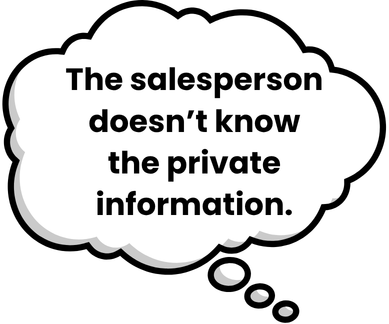

WTP=$12,000
WTP=$20,000
WTP=$25,000
Traditional Monopoly: Price = $25,000
QM = 1
MC = $12,000
Profit = $13,000
WTP=$12,000
WTP=$20,000
WTP=$25,000
Traditional Monopoly: Price = $20,000
QM = 2
MC = $12,000
Profit = $16,000
WTP=$12,000
WTP=$20,000
WTP=$25,000
Price Discrimination — Charge Each Buyer Their WTP
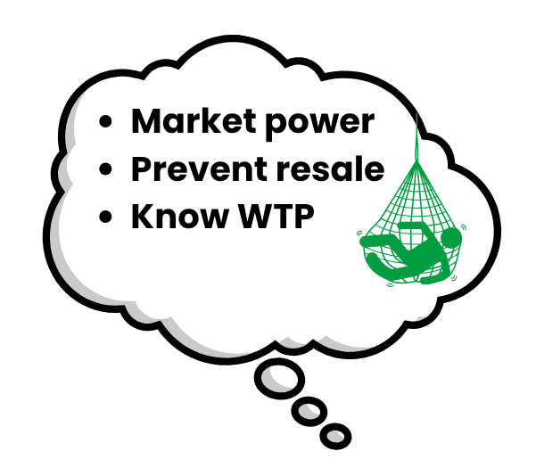
MC = $12,000
Profit = $13K + $8K + $0 = $21,000

WTP=$12,000
WTP=$20,000
WTP=$25,000
What If the Firm Could Read Every Mind?
A monopolist who knows each buyer's exact reservation sells one unit to everyone whose WTP exceeds \(MC\), charging each their reservation:
Output expands to the competitive level \(Q_{PD} = Q_C\) — no deadweight loss. But the firm takes every dollar below demand and above \(MC\): \(CS = 0\), and producer surplus equals total surplus.
Perfect PD is the only form of market power that is allocatively efficient — the efficiency loss of monopoly comes from the single price, not from the markup itself. It is also the hardest to achieve: it needs each buyer's WTP.
The trap — monopoly is not the inefficiency
Most students answer that monopoly causes deadweight loss. It doesn't. The single price does.
Remove the single price and the inefficiency vanishes while the market power remains: output returns to \(Q_C\), \(DWL = 0\), and the entire surplus simply changes hands. Efficient and maximally extractive at the same time.
Next slide: drag the number of price tiers and watch \(DWL\) shrink to zero as the firm's take rises to \$3,200.
Callback · Ch 2’s eBay auction First-Degree in Action: A Second Chance for Every Bidder
Ch 2 recap: the coin sold for $39. Every losing bid is that bidder’s ceiling: their willingness to pay.
Then: the seller gets 10 more coins (say each costs him $20), and he already knows every bidder’s WTP from the auction.
So he messages each one: “Same coin, $1 below your top bid.”
| Bidder | WTP | Offer | Keeps |
|---|---|---|---|
| 2***8 | $38.00 | $37.00 | $1 |
| 8***2 | $35.00 | $34.00 | $1 |
| 1***s | $31.13 | $30.13 | $1 |
| g***5 | $30.11 | $29.11 | $1 |
| 0***c | $22.00 | $21.00 | $1 |
The $13 bidder values the coin below its $20 cost: no offer, and none should be made.
All five buy. Total surplus is $56.24, the most possible: no deadweight loss. The seller takes $51.24; buyers keep $5. That is first-degree PD.
eBay’s real version is the Second Chance Offer: the same item to a losing bidder at their own top bid. Next: what if the seller could do this for every buyer?
A Personal Offer for Each Bidder: the eBay Coins
Dashed bar = what each bidder would pay (Ch 2). Orange line = the $20 cost of a coin. Blue = seller’s take above the $20 cost. Green = the $1 each buyer keeps.
One price for all ($30.11): seller $50.55, buyers keep $33.69, and Buyer 6 is priced out (DWL $2).
A personal offer each, $1 below every top bid: seller $80.24, buyers keep $6, no DWL.
Knowing each buyer’s WTP turns one price into seven, and the seller’s take rises from $50.55 to $80.24. Know more, take more.
The Whole Market: One Price → Perfect PD
Demand \(P = 100 - Q\); \(MC = 20\). With \(k\) optimally-set price blocks, output is \(Q_k = \tfrac{k}{k+1}\,Q_C\) and profit is \(\Pi_k = \tfrac{k}{k+1}(3200)\). At \(k = 1\) this is the uniform monopoly (\(Q = 40\), \(\pi = \$1{,}600\), \(DWL = \$800\)); as \(k\) grows the blue captured surplus rises toward \$3,200 and the red DWL shrinks to zero. This is the earbud market of Walkthrough 12.1, next.
Walkthrough 12.1 — A Price Set From Your Personal Data
Background. Since November 2025, New York has enforced a label on any price set from your data: “THIS PRICE WAS SET BY AN ALGORITHM USING YOUR PERSONAL DATA.” Suppose an online earbud seller’s algorithm really knew each shopper’s maximum. Daily demand is \(P^d(Q) = 100 - Q\) (\(Q\) = shoppers, \$ per pair), and each pair costs \(MC = \$20\).
Problem. Compare (a) competition, (b) one posted price, (c) the algorithm charging each shopper their own maximum. Tally CS, PS and DWL in each.
Set up & solve
(a) Competition \(P=MC\): \(Q_C = 80\), \(P_C = \$20\). \(CS = \tfrac12(80)(80) = \$3{,}200\), \(PS = 0\), \(DWL = 0\).
(b) One posted price \(MR = 100 - 2Q = 20\): \(Q_M = 40\), \(P_M = \$60\). \(\pi = (40)(40) = \$1{,}600\), \(CS = \$800\), \(DWL = \$800\).
Perfect PD & check
(c) A price per shopper (perfect PD): every shopper who values a pair above \$20 buys, so \(Q_{PD} = 80\). Profit is the area under demand above \(MC\):
\(\pi_{PD} = \tfrac12 \times 80 \times 80 = \$3{,}200\) (the triangle between demand and \(MC\))
\(CS_{PD} = 0\), \(DWL = 0\). Profit equals competitive total surplus: the seller takes everything.
Takeaway. Seller/shoppers: \(0/\$3{,}200\) (competition) → \(\$1{,}600/\$800\) (one price) → \(\$3{,}200/0\) (perfect PD). Perfect PD is efficient and takes every dollar of surplus, which is why New York wants it labeled. Real sellers fall short for lack of information: on Instacart, different shoppers saw five prices for the same dozen eggs, \$3.99–\$4.79 (Consumer Reports, Dec 2025; Instacart calls them random tests).
Try 1: Guess WTP From a Cookie — Amazon, 2000
The test (Sept 2000): shoppers who deleted their cookies, so Amazon no longer knew them as regulars, saw lower prices. One DVD fell from $26.24 to $22.74.
The backlash: national news, refunds, and Bezos: “We have never tested and we never will test prices based on customer demographics.”
A cookie is one bit about you: too little to read WTP, and free to delete, so buyers sorted themselves into the low price. Knowing so little, Amazon took little and paid in reputation.
The Aftermath
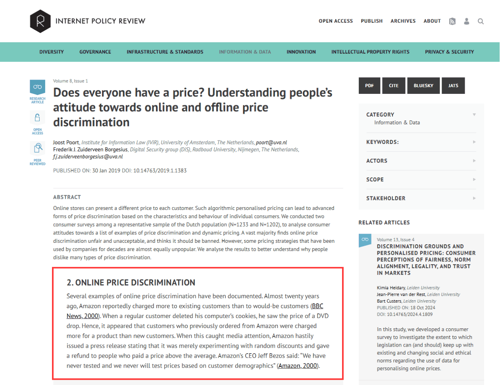
The backlash was immediate — customers felt cheated, and the story made national news.
“We have never tested and we never will test prices based on customer demographics.”
— Jeff Bezos, 2000
Amazon called it “random” testing and refunded shoppers who paid more. The lesson: open first-degree PD on identifiable customers is a PR & legal landmine.
Try 2: Learn What You Browse, Then Show You the Deal
After the backlash, Amazon stopped changing the posted price by shopper. It learns from what you browse instead:
Not about you: dynamic pricing — the price moves for everyone with demand, rivals, time of day, and inventory. Not personalized — just a hyper-fast algorithm.
About you: personalized marketing — your history triggers a coupon or recommendation aimed at you. Same effect as a personal price — but framed as a discount for you, never a surcharge.
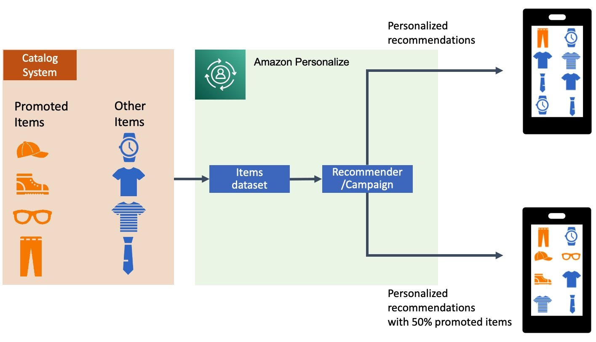
Amazon Personalize — your data drives what you see (and the deal you get)
Try 3: From Your Group to a Group of One
Grouping (third-degree): charge identifiable groups different prices.
Prime members get the discount; non-Prime pay the listed price.
Targeting → a “group of one”: merge your online data (browsing, Prime Video, income proxies) with your offline grocery data.
Amazon learns where you’re inelastic (brand-name detergent at full price) vs elastic (organic chicken only on sale).
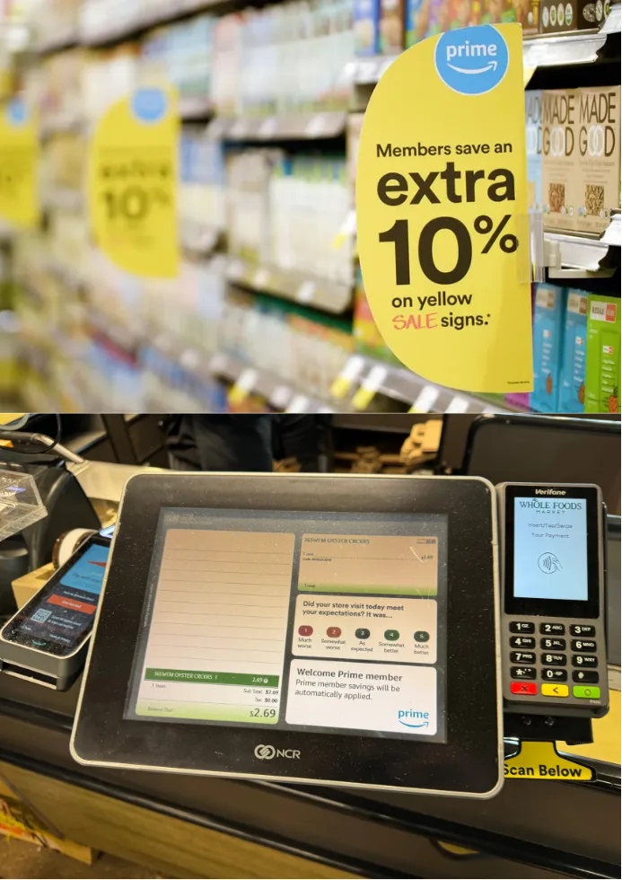
Try 4: The Personalized Coupon
Amazon won’t change the register price by shopper (the 2000 lesson). It uses your data for behavior-based third-degree PD later:
Inelastic you — no coupon for the brand-name detergent you always buy. Why discount what you’ll pay full price for?
Elastic you — a targeted “20% off organic chicken” lands in your app, timed to your next trip.
Personalized coupons ≈ personalized prices: knowing your sensitivity item by item, the firm takes nearly all your surplus, quietly approaching first-degree.
Framing. A “coupon for you” feels like a gift; a “surcharge for you” feels like theft — though the economics is identical. That asymmetry is the whole reason this arc ends in coupons and not in personal prices.
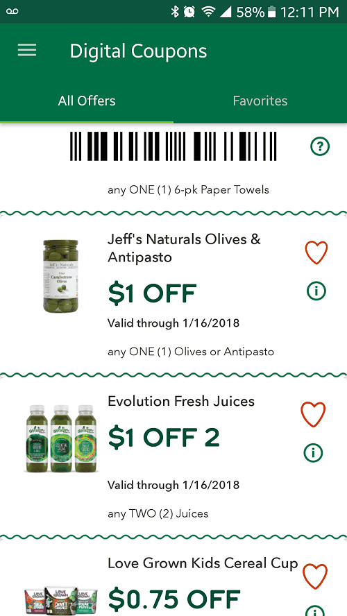
If firms knew every buyer’s WTP perfectly…
You pay your maximum. Each buyer is charged their full WTP, so consumer surplus goes to zero.
Output is efficient. Everyone who values it above cost buys: no deadweight loss, but the firm keeps all the gains.
“The price” disappears. Your neighbor pays a different price for the same item, and shopping around stops helping.
Your data becomes the price tag. Expect pushback: disclosure labels like New York’s, and proposals to ban it.
The Evidence — Personalized PD Is Operational
Wendy's, Feb 2024. \$30M of digital menu boards to test “dynamic pricing.” “Surge pricing on burgers” became the story; walked back in two weeks.
Delta, 2025–26. ~3% of the domestic network priced through a Fetcherr AI engine, targeting 20%. Under Senate pressure Delta denied individualized pricing outright.
FTC, Jan 2025. A 6(b) study of eight pricing intermediaries finds a wide range of personal data feeding individualized-pricing tools.
Walmart, 2024–. Electronic shelf labels re-price chain-wide in seconds from the back office — the infrastructure a personal price would run on.
Heads Up 12.2 — possible, but constrained
Treating first-degree PD as “the bound nobody reaches” was true for the 20th century. Cookies + ML + cross-platform identity graphs make individualized pricing operational today.
So the binding constraint is no longer technological — it is political and legal. That prediction has since been settled by events, which is where we go next.
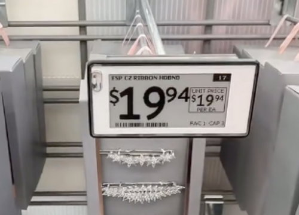
The tag can change in seconds — capability, not yet conduct.
An AI fare engine — which Delta insists reads markets, not people.
The Law That Caught Up — 2026
Two different instruments. Three states ban the practice; one makes you confess to it.
Prohibition
Maryland — first
Effective Oct 1, 2026. Grocers over 15,000 sq ft + food delivery. Fines to \$10k (\$25k repeat), enforced by the state attorney general.
Connecticut — broadest
Signed June 2026. Retailers and delivery services generally — not just groceries.
New Jersey — the hardware
Signed Jul 23, 2026. Plus a blanket freeze on new grocery shelf labels, Feb 2027–Feb 2028.
Disclosure
New York — in force Nov 10, 2025. Doesn't ban it; makes you label it: “this price was set by an algorithm using your personal data.” Up to \$1,000 a violation — and New York’s attorney general pressed Instacart on price variation under it in Jan 2026.
The binding constraint was never informational. Data and ML relaxed exactly the constraint §12.2 said made perfect PD impossible — and the bound held anyway, because a second one bound instead: legitimacy. Roughly 90 bills across 27 states are live, and the Senate took testimony on Aug 4, 2026.
§12.3
Second-Degree PD
Versioning & screening: offer a menu, let buyers reveal themselves
Second-Degree PD — Can’t Tell You Apart? Make You Choose
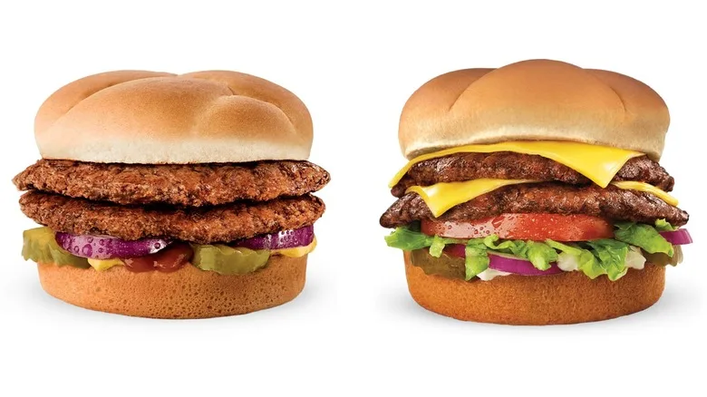
Plain double
Deluxe double
Same two patties. The deluxe adds cheese, lettuce and tomato, and costs more.
The firm knows buyers differ but can’t see who is who, and asking fails: everyone claims to be the cheap type. So it posts a menu and lets each buyer pick. Your choice reveals your type.
Worth buying? (individual rationality) Each type’s own pick leaves it surplus ≥ 0, so it buys.
Want someone else’s? (incentive compatibility) Each type likes its own pick best: the topping lover takes the deluxe, the rest take the plain.
Ways to build the menu
Versioning ← we start here
tiers of one product
Quantity discounts
cheaper per unit in bulk
Two-part tariffs
entry fee + per-use price
Bundling
sell items together
Second-Degree — Build a Menu, Let Buyers Sort Themselves
The firm can’t tell who you are — so it designs options and lets you reveal your type by choosing.
Versioning. Spotify: Individual $12.99 → Duo $18.99 → Family $21.99, same catalog, tiers gated by account count.
Quantity discounts. Costco 50-bag box at $0.45/bag vs $0.50 at the corner store.
Two-part tariffs. Gym: $300/yr + $10/class. Buffet: $20 in, $0/plate.
Bundling. $15 CD (12 songs) → iTunes $0.99 unbundled → Spotify re-bundles 100M songs at $12.99.
Netflix tiers: $6.99 ad-supported vs $22.99 premium — a $16 gap for the same library. Cinephiles self-select up; budget households (higher elasticity) self-select into ads. ~70M ad-tier users by 2025.
It’s indirect PD — used when the firm has market power and can prevent resale, customers have different demand curves, but the firm can’t identify a buyer’s type before purchase. Its tool: post a menu of pricing options and let customers self-select.
Two Rules Every Menu Must Pass
The firm can’t see your type, so it can’t assign you a tier. It can only set prices so that each type chooses the tier built for it. Every type has to pass two checks:
IR · rule 1
Individual rationality
“Is my tier worth buying at all?”
Spotify: is Duo (2 accounts, \$18.99 a month) worth it to a couple? If not, they walk away and the firm earns nothing from them.
IC · rule 2
Incentive compatibility
“Would I rather have the tier meant for someone else?”
Spotify: would a household of five rather squeeze onto Duo than pay for Family (up to 6 accounts)? If yes, Family never sells.
Which rule pinches whom? For the low type, IR is tight: the firm charges up to its full value. For the high type, IC is tight: it must be left enough surplus not to buy down. That surplus is its information rent.
Versioning — Buyers Self-Select
Versioning: the firm offers different versions of one product, each designed for a different type of buyer. Each buyer picks the version best for them, and the pick reveals their type.
Spotify: Individual (\$12.99), Duo (\$18.99, 2 accounts), Family (\$21.99, up to 6). Households sort themselves by size; the cheaper tiers are capped (one account, same address) so bigger households pay more.
No cost difference needed: the versions can cost the same to make; the less elastic group (big households) pays the higher markup.
Versioning — Buyers Self-Select
Offer a menu of versions and let each buyer voluntarily pick the one best for them — revealing their type. The firm prices by the version chosen, not by who you are. To make buyers split, firms widen the gap between tiers — sometimes intentionally limiting the cheaper one (the “damaged-goods” idea: stripped Basic Economy, a deliberately crippled chip).
Spotify is textbook versioning: Individual ($12.99), Duo ($18.99 / 2 accounts), Family ($21.99 / up to 6 accounts). Households self-select by size, and the cheaper tiers are deliberately capped (one account, same-address rules) so higher-value households pay more.
Self-Sorting Captures the Entire Demand Curve
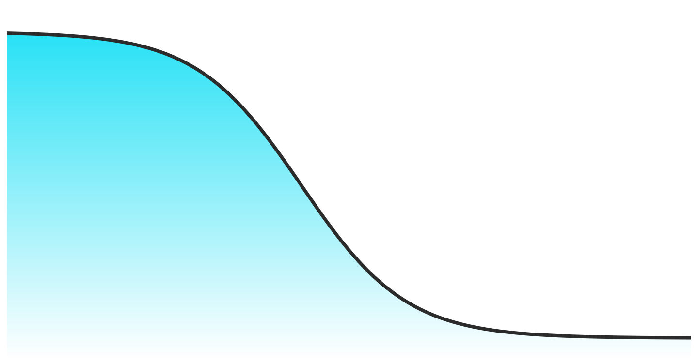
To fund $17B+/yr of content like Stranger Things, Netflix uses the identical core product to monetize the bottom of the curve without sacrificing the margins at the top.
Versioning in Action — Duo vs Family
The rule: each household buys the tier that leaves it the most surplus (WTP − price). Spotify can’t see household size; it only sets the prices.
| Surplus = WTP − price | Duo | Family |
|---|---|---|
| Couple WTP: Duo \$24.00 · Family \$26.00 | \$24.00 − \$18.99 = \$5.01 | \$26.00 − \$21.99 = \$4.01 |
| Household of five WTP: Duo \$28.00 · Family \$38.00 | \$28.00 − \$18.99 = \$9.01 | \$38.00 − \$21.99 = \$16.01 |
Each household picks the tier built for it: the menu is incentive compatible (IC). Nobody checked who lives at home; the household chose.
Versioning — When IC Fails
The rule: each household buys the tier that leaves it the most surplus (WTP − price). Same households, same WTPs. Spotify gets greedy and raises Family.
| Surplus = WTP − price | Duo | Family |
|---|---|---|
| Couple WTP: Duo \$24.00 · Family \$26.00 | \$24.00 − \$18.99 = \$5.01 | \$26.00 − \$29.99 = −\$3.99 |
| Household of five WTP: Duo \$28.00 · Family \$38.00 | \$28.00 − \$18.99 = \$9.01 | \$38.00 − \$29.99 = \$8.01 |
Both households buy Duo. Family never sells: price the top tier too high and the big household defects down.
IC for the household of five:
\$38.00 − PF ≥ \$9.01 ⇒ PF ≤ \$28.99
The “Stripped” Economy — Damaged Goods
The flip side of versioning: a firm will deliberately make the cheap version worse — spending nothing, or even money, to degrade it — so high-WTP buyers refuse to trade down and pay for the premium tier.
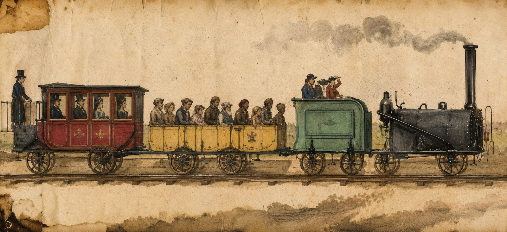
Then. 1840s railways ran roofless third-class cars. Dupuit (1849): “not to hurt the poor, but to frighten the rich.”
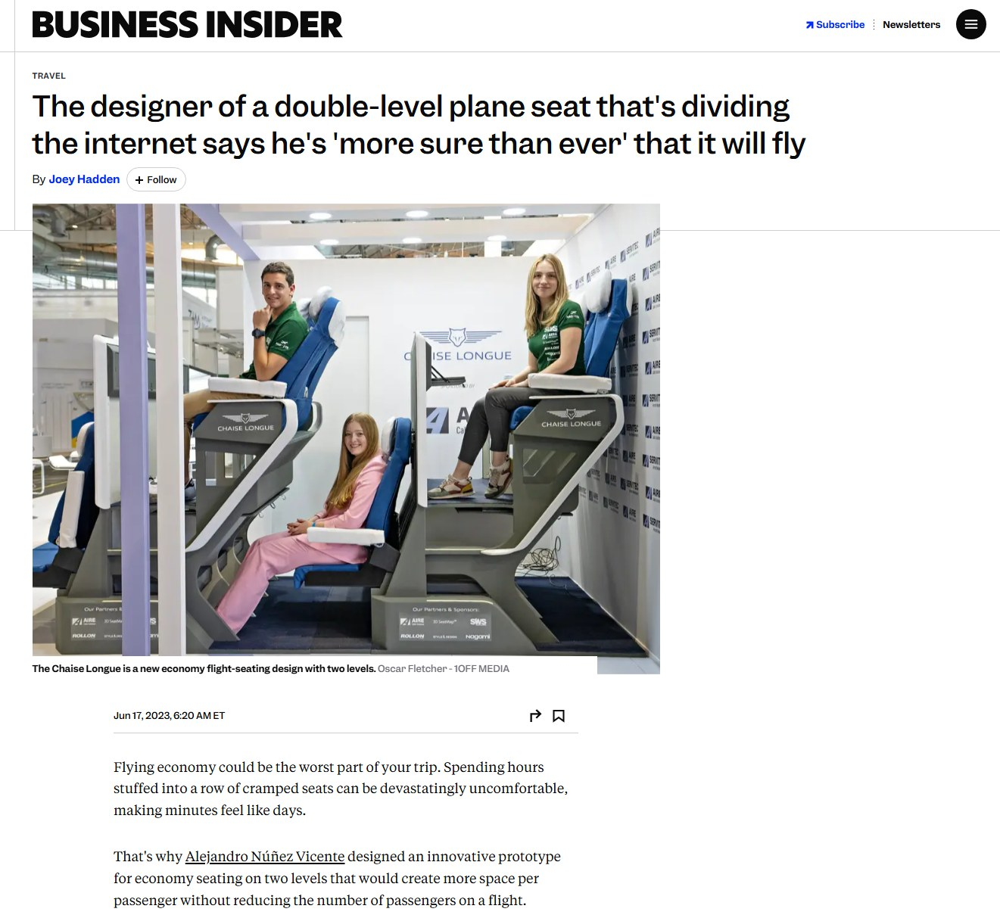
Now. Ever-tighter “stripped” economy seats and Basic Economy keep the cheap tier just painful enough to upsell.
Now, in software — Spotify Free
Same catalog as Premium. What Free removes:
ads between tracks · no offline downloads · no playing songs in any order · no lossless audio · no group session · no queue control
Restoring every one of those costs Spotify \$0.
Software makes Dupuit's point unanswerable. Ripping a roof off a carriage at least saved timber; letting you play a song in the order you like has a marginal cost of exactly zero. So the limit cannot be about cost — it can only be there to protect the Premium fare.
Walkthrough 12.2 — GTA VI: Standard vs Ultimate
Problem. Rockstar sells GTA VI as Standard or Ultimate (extra vehicles, weapons, outfits; digital, so MC = 0). Two equally common buyers it can’t tell apart. Which prices maximize profit? (WTPs made up.)
| WTP | Standard | Ultimate | Extras worth |
|---|---|---|---|
| Casual fan | \$80 | \$85 | +\$5 |
| Superfan | \$100 | \$120 | +\$20 |
Image: Rockstar Games
1. Sell one edition: try all four prices
| Edition | Price | Who buys | Profit |
|---|---|---|---|
| Standard | \$80 | both | \$160 |
| Standard | \$100 | superfan | \$100 |
| Ultimate | \$85 | both | \$170 ← best |
| Ultimate | \$120 | superfan | \$120 |
Offer both: the menu
2. Standard = \$80, all the casual fan will pay. (her IR)
3. Ultimate = \$100. The superfan could buy the Standard and keep \$100 − \$80 = \$20, so the Ultimate must leave \$20 too: \$120 − \$20 = \$100. (the superfan’s IC)
4. Menu profit \$80 + \$100 = \$180, beating the best single price (\$170) by \$10.
Rockstar’s actual prices: Standard \$79.99, Ultimate \$99.99. The menu we just derived.
The \$20 is the information rent (perfect PD: \$200). The casual fan gets the Standard though the Ultimate costs \$0 more: the distortion at the bottom.
Quantity Discounts — Buy in Bulk, Pay Less per Unit
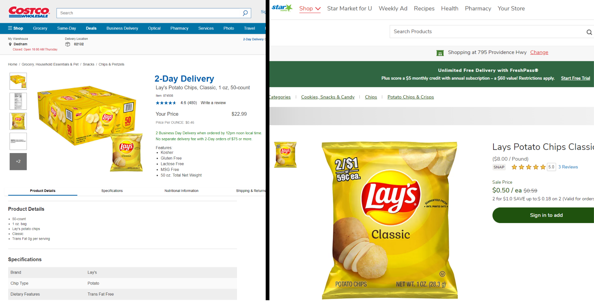
Costco 50-pack
\$0.46 / bag
2 for \$1
\$0.50 / bag
Single bag
\$0.59 / bag
A lower price per unit for buyers who take more. The store can’t tell a light snacker from a heavy one, so it prints a menu on the bag (“2/\$1 or 59¢ ea.”) and lets each shopper pick.
Second-degree PD again: the price you pay depends on the package you choose, not on who you are.
The catch: discount the 2-bag deal too steeply (2 for \$0.90) and the store cannibalizes its own single-bag sale: IC breaks. Next: real numbers.
Quantity Discounts — Buy in Bulk, Pay Less per Unit
Costco, 50-pack
$22.99 ÷ 50 = $0.46 / bag
Star Market, 2 for $1
$0.50 / bag
Star Market, single
$0.59 / bag
Buying in bulk → a lower cost per unit. Look at the bag: “2/$1 or 59¢ ea.” is printed on the packaging — the whole menu, on the product. Pricing by quantity is second-degree PD, and the next three slides analyze exactly this menu.
Two Buyer Types, One Menu
Same Star Market menu as the last slide — \$0.59 each, or 2 for \$1.00, printed on the bag. Marginal cost is \$0.30 a bag. Two kinds of shopper walk in, and the firm cannot tell them apart:
The occasional buyer
One person, one movie night. \(P = 1.04 - 0.45Q\) — steep, because the second bag is worth much less than the first.
The obsessed buyer
Snacks all week. \(P = 0.70 - 0.10Q\) — flat, because bag two is nearly as good as bag one.
Which package does each pick? Not “is it worth the price?” but “which leaves me more?” (values = areas under each demand curve)
| Surplus = value − price | 1 bag · \$0.59 | 2 bags · \$1.00 | Extra-bag test: +41¢ for bag 2 |
|---|---|---|---|
| Occasional | \$0.815 − \$0.59 = 22.5¢ | \$1.180 − \$1.00 = 18¢ | 2nd bag worth 36.5¢ < costs 41¢ → stop at 1 |
| Obsessed | \$0.650 − \$0.59 = 6¢ | \$1.200 − \$1.00 = 20¢ | 2nd bag worth 55¢ > costs 41¢ → take 2 |
Two bags are worth more than \$1.00 to the occasional buyer, but one bag leaves more. Each type picks its own package: the menu is incentive compatible, and that is not automatic.
Does the Real Menu Screen?
Tempt the occasional buyer with 2-for-\$1.00 (\$0.50 a bag). Weigh what they save against what they waste. (press →)
Saves \$0.099. The per-bag price falls \$0.59→\$0.50 on the bag they’d buy anyway, plus a sliver of cheap extra units out to \(Q = 1.20\).
Wastes \$0.144. At \$0.50 they want only 1.20 bags. The deal forces 2. The rest goes stale — that waste is the red triangle.
Loss beats gain by \$0.045 — so the occasional buyer sticks with the single bag. The real menu is incentive compatible.
Check it the other way, on totals: one bag leaves \(0.815 - 0.59 = \mathbf{\$0.225}\); two bags leave \(1.18 - 1.00 = \mathbf{\$0.180}\). And the obsessed buyer goes the other way — \(1.20 - 1.00 = \$0.200\) beats \(0.65 - 0.59 = \$0.060\). Each type picks its own package. The menu works.
How the Firm Breaks Its Own Menu
Same two buyers, same values. The store gets generous: 2 bags for \$0.90 instead of \$1.00. Each buyer still takes whichever leaves more.
| Surplus = value − price | 1 bag · \$0.59 | 2 bags · \$0.90 | Extra-bag test: +31¢ for bag 2 |
|---|---|---|---|
| Occasional | \$0.815 − \$0.59 = 22.5¢ | \$1.180 − \$0.90 = 28¢ | 2nd bag worth 36.5¢ > costs 31¢ → take 2 (not the pack meant for them) |
| Obsessed | \$0.650 − \$0.59 = 6¢ | \$1.200 − \$0.90 = 30¢ | 2nd bag worth 55¢ > costs 31¢ → take 2 |
Cannibalized. Both buyers take 2 bags, so nobody pays the \$0.59 single price. The deal meant for the obsessed buyer has eaten the full-price sale.
Profit per pair (MC 30¢ a bag)
Real menu: 29¢ + 40¢ = 69¢
2 for \$0.90: 30¢ + 30¢ = 60¢
The bigger discount made the store poorer. The menu holds only while 2 bags cost more than \$0.955 (\$1.18 − 22.5¢); the real \$1.00 clears it by 4.5¢.
Walkthrough 12.3 — Quantity-Discount Menu
Problem. Spotify sells audiobook listening hours in two packs: small = 3 hours for TS, large = 6 hours for TL. Two equally common buyers it can’t tell apart; extra hours cost it nothing (MC = 0). Suppose Spotify’s economists have studied its listeners and estimated each group’s demand, so they know what the hours are worth to each. Set the two prices.
| Worth to the buyer | Demand | First 3 hours | Hours 4–6 | All 6 hours |
|---|---|---|---|---|
| Light | q = 3 − p | \$4.50 | \$0 | \$4.50 |
| Heavy | q = 6 − p | \$13.50 | \$4.50 | \$18 |
| Surplus = value − price | Small · 3 hrs · TS | Large · 6 hrs · TL | Extra-hours test |
|---|---|---|---|
| 1. Light IR binds | \$4.50 − TS = \$0, so TS = \$4.50 | \$4.50 − TL < \$0 | hours 4–6 worth \$0 to her → never takes the large pack |
| 2. Heavy IC binds | \$13.50 − \$4.50 = \$9 his fallback | \$18 − TL = \$9, so TL = \$9 | hours 4–6 worth \$4.50 to him → large costs at most \$4.50 more |
Profit per pair: \$4.50 + \$9 = \$13.50, against \$10.13 at the best single price and \$22.50 if Spotify could read minds. Heavy keeps \$9: his information rent.
Walkthrough 12.3 — Why TL Stops at \$9
Same test as the chips: each buyer takes the package that leaves more. Small = 3 hrs at \$4.50. How high can the large pack go?
What the hours are worth (areas under each demand curve)
| Surplus = value − price | Small · 3 hrs · \$4.50 | Large · 6 hrs · TL | Extra-hours test |
|---|---|---|---|
| Light | \$4.50 − \$4.50 = \$0 | \$4.50 − TL = < \$0 | hours 4–6 worth \$0 to her → never takes the large pack |
| Heavy | \$13.50 − \$4.50 = \$9.00 | \$18.00 − TL ≥ \$9.00 | hours 4–6 worth \$4.50 to him → large may cost at most \$4.50 more |
TL = \$4.50 + \$4.50 = \$9.00. A cent more and Heavy walks down to the small pack. The \$9 he keeps isn’t generosity: it’s the price of the small pack existing. IR binds for Light, IC binds for Heavy.
§12.4 — the central tool
Third-Degree (Group) PD
The Ch 11 inverse-elasticity rule, applied per segment: \(L_i = -\dfrac{1}{\varepsilon_{D,i}}\)
Third-Degree PD — Price by Observable Group
Spotify: Individual \$12.99, Student \$6.99. The .edu check is the fence that stops resale.
The firm sees a label (student, age, location, time) and charges the group, not the person.
It works when
1. the firm has market power and can stop resale
2. the groups differ in price sensitivity
3. the firm can tell the groups apart before the sale
The rule: the less elastic group pays more, the more elastic group pays less. Students are price-sensitive, so they get \$6.99.
Third-degree: the seller sees your group and assigns the price.
Second-degree: the seller posts a menu and you pick.
Third-Degree — Different Price to an Observable Group
Spotify. \$12.99 Individual vs \$6.99 Student. Students have higher elasticity; a .edu check prevents arbitrage. Charge them full price and many leave.
The logic is always elasticity: charge the inelastic group more, the elastic group less. Segment by an observable trait — age, student status, location, timing — and stop resale.
Third-degree. The seller observes your group and assigns the price. You cannot opt in.
Second-degree. The seller posts a menu and you pick. Your choice reveals your type.
Same elasticity logic driving both — the difference is who does the sorting. This is the most-tested distinction in the chapter.
Third-Degree — the Student Discount
A segment is only worth defining if you can verify it. The .edu check is doing the real work here — it is the arbitrage fence. No fence, no segment: one resold login and the \$6.99 tier becomes everyone’s price.
Third-Degree — Student Platforms (UNiDAYS)
Platforms like UNiDAYS gate deals (HP, Microsoft 365) behind a verified student ID. The long-run twist: once students learn these tools, they keep using them at work — becoming more inelastic later, when they'll pay full price.
Third-Degree — Movie Tickets and Airline Fares
Movie tickets · by age
- Trait: age. Children and seniors pay less than adults.
- Why: they are more elastic; the discount fills empty seats at MC ≈ 0.
- Fence: the ticket is checked at the door.
Airline fares · by trip type
- Trait: leisure (elastic) vs business (inelastic).
- Why: fares rise near departure (business books late); early and off-peak = leisure.
- Fence: the ticket must be used by the purchaser.
Same recipe both times: a trait the firm can see that tracks elasticity, plus a fence that stops resale.
Third-Degree — Airline Fares
Airlines charge varying fares to leisure (elastic) vs business (inelastic) travelers.
- Prices rise as the departure date nears (late buyers = business).
- Lower fares on non-peak days & with advance booking (leisure).
- The ticket must be used by the purchaser — arbitrage blocked.
Isolating Impulsive Buyers — Without Cutting Margins
Gen Z User (Impulsive)
TikTok's algorithm tracks watch-time to the millisecond and fires highly targeted flash coupons to trigger impulse buys.
Discount
Older Demographic (Direct Search)
Older buyers viewing the exact same product see no discount.
Which degree is this? Third — and it is the modern form of it. The platform assigns the price from what it observes (watch-time, scroll speed, whether you arrived by feed or by search); you never pick from a menu. Buyer chooses ⇒ second-degree. Firm sorts you ⇒ third. The only thing that has changed since student IDs is how fine the groups can get — push it far enough and the “group” is one person.
This isolation generated $65B in GMV (gross merchandise value — the total value of goods sold through the platform) for TikTok Shop in 2025. Sellers optimize revenue by never running site-wide discounts that would erode profit from buyers already willing to pay full price.
Starbucks: Same Coffee, Two Prices
The same Grande coffee costs $3.65 at the transit-station store and $2.95 at a street-front store a few blocks away. Two groups: commuters and residents. A good case for third-degree PD?
Market power? Yes — at the station there is no other café before the train.
Different demand curves? Yes — commuters are in a hurry; residents can walk on or brew at home.
Identify groups & prevent resale? Yes — the store’s location sorts the groups, and coffee is drunk where it is bought: nobody resells cups across town.
Why the Two Demand Curves Differ
Time: a commuter has minutes before the train and no other café on the platform — less sensitive to price.
Options: a resident can walk to another café or brew at home — more price-sensitive.
Result: at its own optimum each group has its own elasticity — commuters \(\varepsilon_D = -1.33\), residents \(-1.44\). Careful: the residents’ line is the steeper one, yet residents are the more elastic group. Steeper is not the same as less elastic; check the numbers, not the picture.
(a) Commuters, station store
(b) Residents, street store
Each store priced where its own MR = MC: the bigger, less-elastic commuter market buys more cups (550 vs 205) and pays more ($3.65 vs $2.95). Curves illustrative, prices from the menus; same cup scale in both panels.
Solve Each Segment: \(MR = MC\)
The two demands, with a common \(MC = \$0.90\) a cup: commuters \(Q_T = 1{,}280 - 200P_T\), residents \(Q_L = 500 - 100P_L\) (cups a day). The station is the bigger market: more people pass through it. Invert, double the slope for \(MR\), set equal to \(MC\):
Commuters (station)
\(P_T = 6.40 - 0.005Q_T\), so \(MR_T = 6.40 - 0.01Q_T\).
\(MR_T = MC:\; 6.40 - 0.01Q_T = 0.90\)
\(\Rightarrow Q_T = 550,\quad P_T = \$3.65\)
Residents (street)
\(P_L = 5.00 - 0.01Q_L\), so \(MR_L = 5.00 - 0.02Q_L\).
\(MR_L = MC:\; 5.00 - 0.02Q_L = 0.90\)
\(\Rightarrow Q_L = 205,\quad P_L = \$2.95\)
Commuters pay $3.65 and buy 550 cups; residents pay $2.95 and buy 205 — exactly the two menus. The less-elastic group (\(\varepsilon = -1.33\) vs \(-1.44\) at these prices) is charged the higher price. Two separate Ch 11 problems, solved side by side.
Producer Surplus from Segmenting
PS = (price − MC) × quantity, summed over the two stores (per day):
Commuters
\(PS_T = (\$3.65 - \$0.90)\times 550\)
\(= \$1{,}512.50\)
Residents
\(PS_L = (\$2.95 - \$0.90)\times 205\)
\(= \$420.25\)
\(PS_{\text{combined}} = \$1{,}512.50 + \$420.25 = \mathbf{\$1{,}932.75}\) a day
How does this compare to one price at both stores? Let’s actually compute it →
Was Segmenting Worth It?
One price at both stores
Add the two groups: \(Q = Q_T + Q_L = 1{,}780 - 300P\), so \(MR = 5.93 - \tfrac{1}{150}Q\).
\(MR = MC:\; Q = 755,\; P = \$3.42\)
\(PS = (3.42 - 0.90)(755) = \mathbf{\$1{,}900.08}\)
| One price | Segmented | |
|---|---|---|
| Commuter price | $3.42 | $3.65 |
| Resident price | $3.42 | $2.95 |
| Commuter cups | 597 | 550 |
| Resident cups | 158 | 205 |
| Total cups | 755 | 755 |
| Producer surplus | $1,900.08 | $1,932.75 |
Segmenting earns $32.67 more a day — a 1.7% gain, not a windfall.
Look at the row that matters: total cups are identical. Segmenting moved about 47 cups from commuters to residents and sold not one extra cup. So the firm’s $32.67 is pure transfer — consumers lose $49.00, and total surplus falls $16.33. Unlike perfect PD in §12.2, third-degree PD is not efficient.
How Much Should Each Segment Pay?
Where the rule comes from
Segments can’t resell to each other, so profit is just a sum of separate markets:
\(\pi = \sum_i (P_i - MC)\,Q_i(P_i)\)
Each segment gets its own first-order condition:
\(Q_i + (P_i - MC)\,Q_i' = 0\)
which rearranges to
\(L_i = \dfrac{P_i - MC}{P_i} = -\dfrac{1}{\varepsilon_{D,i}}\)
Chapter 11’s Lerner rule, run once per segment.
Starbucks (MC \$0.90). Markup first, then price: \(P = \dfrac{MC}{1 - L}\)
Commuters \(\varepsilon_D = -1.327\): \(L = 0.7534 \Rightarrow P = \tfrac{0.90}{0.2466} = \$3.65\)
Residents \(\varepsilon_D = -1.439\): \(L = 0.6949 \Rightarrow P = \tfrac{0.90}{0.3051} = \$2.95\)
The less elastic segment pays more. Same coffee, same MC: commuters pay about 24% more because their demand is less sensitive to price. The same \$3.65 and \$2.95 as the MR = MC solve.
You Try — Same Tour, Two Cities
An artist plays back-to-back arena dates. The promoter's marginal cost per seat is \$60 — the artist's guarantee eats most of every ticket. Demand differs by market: Boston \(\varepsilon_D = -3\) (student-heavy, price-sensitive), New York \(\varepsilon_D = -2\) (denser fanbase, higher incomes, out-of-town buyers). Price each date. (try it, then press →)
Use \(\dfrac{P - MC}{P} = -\dfrac{1}{\varepsilon_D}\):
Boston \((\varepsilon_D=-3)\): \(\dfrac{P-60}{P} = \dfrac{1}{3} \Rightarrow 3(P-60)=P \Rightarrow P_{\text{Boston}} = \$90\)
New York \((\varepsilon_D=-2)\): \(\dfrac{P-60}{P} = \dfrac{1}{2} \Rightarrow 2(P-60)=P \Rightarrow P_{\text{NYC}} = \$120\)
The less-elastic New York date carries the higher price — \$120 vs \$90, a 33% premium on an identical show.
Then ask what stops arbitrage. Nothing physical — Boston is the cheap date, so a New York fan could buy there and take the bus up. The fence is the travel cost, and it only has to exceed the \$30 saved. Segmentation survives on friction, not on walls.
Calculus Corner 12.1 — Inverse-Elasticity Rule, Per Segment
With \(K\) non-arbitrageable segments and constant \(MC\), maximize
\[ \pi = \sum_i (P_i - MC)\,Q_i(P_i) \]
Each segment's FOC is independent of the others:
\[ Q_i + (P_i - MC)\,Q_i' = 0 \]
Multiply by \(P_i/Q_i\) and rearrange:
\[ L_i = \frac{P_i - MC}{P_i} = -\frac{1}{\varepsilon_{D,i}} \]
Equivalently \(P_i = \dfrac{MC}{1 + 1/\varepsilon_{D,i}}\). The rule from Ch 11 simply fires \(K\) times in parallel — once per segment.
The more-elastic segment gets the smaller markup. Students pay less because their demand is more elastic; business travelers pay more because theirs is not.
The only difference from Ch 11: Ch 11 had one segment, Ch 12 has \(K\). Same engine, run per group — segments don't interact because there's no arbitrage between them.
Application 12.1 — Spotify's Portfolio as Live Third-Degree PD
Five distinct prices for functionally the same library — each segment with a different elasticity, a different anti-arbitrage technology, and a different observed Lerner index. Spotify's Q4 2025 blended global ARPU of €4.70 (~\$5.10/mo) sits far below the 2025 US Individual list of \$11.99 — a wedge driven by exactly this multi-segment cross-subsidization. (Both figures are Q4 2025, so they are period-matched; today's list is \$12.99.)
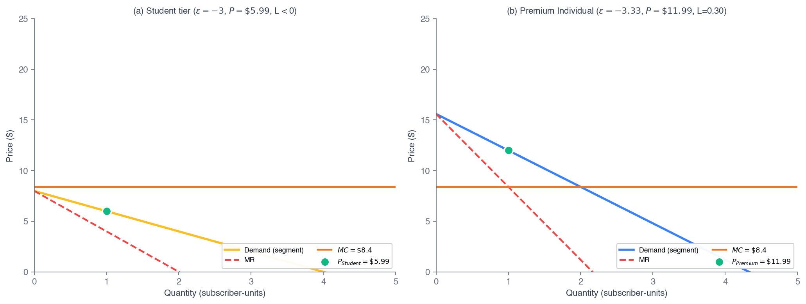
Fig 12.3 — two segments, common \(MC\); each priced where \(MR_i = MC\). Less elastic → higher price.
Walkthroughs 12.4 & 12.5 — Spotify’s Tiers
Problem. Spotify’s marginal cost is \$8.40 per subscriber (from Ch 11). Predict each tier’s price with the per-segment rule \(P = \dfrac{MC}{1 - 1/|\varepsilon|}\), then compare with the 2025 prices.
| Tier | Elasticity | Rule predicts | Actual | Result |
|---|---|---|---|---|
| W12.4 Premium | −3.33 | 8.40 / 0.70 = \$12.00 | \$11.99 | Match. The rule nails it. |
| W12.4 Student | −5.0 | 8.40 / 0.80 = \$10.50 | \$5.99 | Below MC. No elasticity gets under \$8.40: a loss leader to win future Premium customers. |
| W12.5 Family | −1.5 | 8.40 / 0.33 = \$25.20 | \$19.99 | Too high. Near |ε| = 1 the rule blows up; rivals and \$3.33 per account cap it. |
Takeaway. The rule fits a tier priced like a plain monopoly; a miss points to future customers (Student) or rivals (Family, Ch 13).
Theory and Data 12.1 — the Jan 15, 2026 reset. Individual \$11.99 → \$12.99, Student \$5.99 → \$6.99, Duo \$16.99 → \$18.99, Family \$19.99 → \$21.99. If MC stays 70% of list (0.70 × \$12.99 = \$9.09), the Lerner index stays 0.30: that is the assumption showing, not a test of the rule.
Walkthrough 12.5 — Family Tier: When the Formula Breaks
Problem. Same \(MC = \$8.40\), same rule \(P_i^{\ast} = MC/(1 + 1/\varepsilon_{D,i})\). Assume Family-segment elasticity \(\varepsilon_F = -1.5\) (toward inelastic). Predict the Family-subscription price and compare to the 2025 actual (\$19.99).
Apply the rule
\(P_F^{\ast} = 8.40/(1 - 1/1.5) = 8.40/(1/3) = \$25.20\). Predicted \$25.20 vs actual \$19.99 — off by \$5.21.
As \(|\varepsilon| \to 1\), \((1 + 1/\varepsilon) \to 0\), so \(P^{\ast} \to \infty\). The formula assumes the firm operates strictly where \(|\varepsilon| > 1\); near \(|\varepsilon| = 1\) it explodes.
What constrains real pricing
Per-account dilution (\$19.99 / 6 = \$3.33 < MC), household-sharing externalities, and a competitive ceiling (Apple Music Family, then \$16.99).
Real pricing = inverse-elasticity rule plus side constraints — exactly what a Ch 13 oligopoly model starts to formalize.
Takeaway. Near \(|\varepsilon| = 1\) the rule blows up, so real Family pricing is pinned by what the formula cannot see: per-account economics and a competitive ceiling. The tool shows you where it stops being the whole story — the bridge to Ch 13.
Since the hike: Family \$21.99 — per-account \$3.67, still below \(MC\) — and the ceiling moved too, Apple Music Family \$16.99 → \$19.99 in Jul 2026. Two rivals re-pricing within six months is the Ch 13 point arriving on its own.
Theory and Data 12.1 — Spotify's Jan 15, 2026 Portfolio Reset
On Jan 15, 2026 Spotify reset the whole US ladder: Individual \(\$11.99 \to \$12.99\), Student \(\$5.99 \to \$6.99\), Duo \(\$16.99 \to \$18.99\), Family \(\$19.99 \to \$21.99\). Audiobooks stayed at \$9.99.
If per-subscriber MC scales at 70% of list, the new MC is \(0.70 \times 12.99 = \$9.09\). The new Lerner is \(L = (12.99 - 9.09)/12.99 = 0.300\) — exactly unchanged. Implied \(\varepsilon_D = -3.33\), also unchanged.
A firm at the FOC, facing the same elasticity and the same MC-as-share-of-price, moves list price and MC in lockstep — holding the markup constant against royalty-cost inflation.
\$12.99
New Individual (was \$11.99)
\$9.09
New implied royalty \(MC\)
0.300
Lerner \(L\) — held constant
−3.33
Implied \(\varepsilon_D\) — unchanged
Application — Wegovy Across Institutional Segments
Pharma = third-degree PD on steroids
Branded Wegovy carries segment-specific prices: Medicaid (statutory rebate floor), Medicare (IRA-negotiated Max Fair Price, effective Jan 1 2026), commercial (PBM-rebated 30–50% below list), and cash-pay (highest list).
Ch 11 cash-pay 4-tuple: \(P \approx \$1{,}349\), \(MC \approx \$5\), \(L = 0.996\), \(\varepsilon_D = -1.004\). Medicaid ~\$1,037/mo post-rebate, Lerner still ~0.99. Same drug; the system enforces the segments.
Heads Up 12.3 — PD welfare is ambiguous
PD does not always reduce welfare. If PD lets the firm serve a market it would otherwise abandon, total surplus rises (output expands). If it only redistributes CS→PS, surplus is unchanged. If it cuts output (rare), surplus falls.
Evidence is mixed: Williams (2022, airlines) finds dynamic pricing raises welfare via output expansion; Crawford-Yurukoglu (2012, cable) finds CS falls ~5%. The welfare question is empirical, not theoretical.
The “Pink Tax”: Price Discrimination or a Cost Difference?
What is the “pink tax”? Not a tax at all: it is the name for paying more for a product or service marketed to women than for a nearly identical one marketed to men, such as a pink razor, a women’s shampoo, or a haircut or dry cleaning. The term spread after New York City’s 2015 study From Cradle to Cane, which compared about 800 products with clear women’s and men’s versions. The economic question is why the price differs.
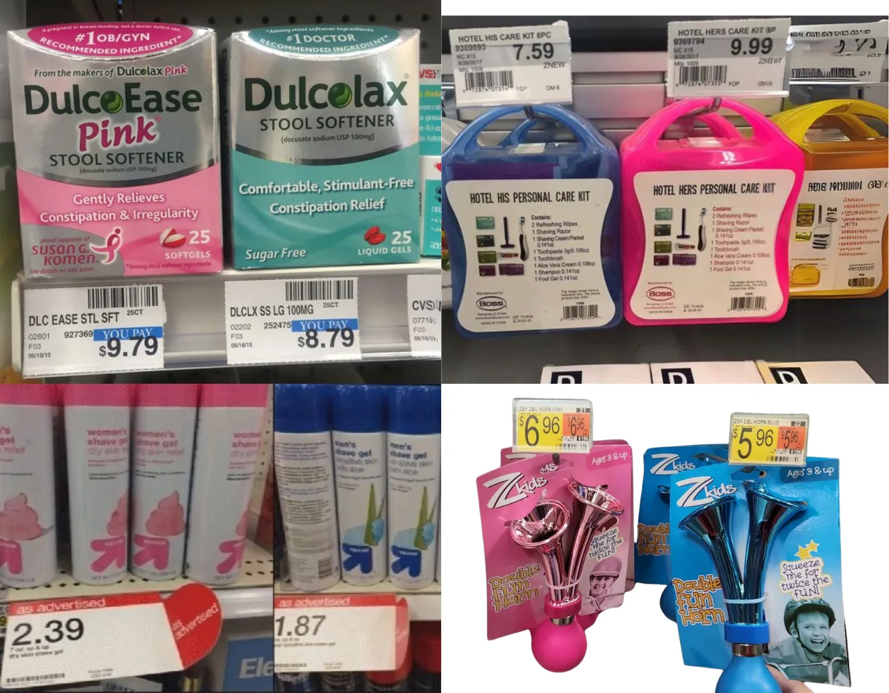
The observation. Products aimed at women often cost more. The 2015 NYC audit found an average gap of 7% across 35 categories (13% in personal care).
Story 1: price discrimination. Women switch brands less (less elastic), so firms charge a higher markup.
Story 2: cost difference. Different ingredients and packaging cost more to make.
The evidence (goods): compare the same brand with the same main ingredients and the gap almost disappears; women’s razors are even cheaper (Moshary, Tuchman & Bhatia, Marketing Science 2023). So for goods it is mostly cost, not PD. For services like haircuts, it is still unsettled.
The law uses the same test. New York (2020) and California (in force 2023) ban gender-based prices for substantially similar goods; a gap is allowed only where cost really differs.
Cage-Free Eggs — Discrimination or Cost?
Same test as the pink tax: is the price gap bigger than the cost gap?
1 · The cost gap. More space and labor per hen: cage-free eggs cost about 25% more to produce (UC Davis study).
2 · The price gap. In grocery scanner data the cage-free premium averaged about 57%, and about 42% of that came from egg color (brown), not the hens. Chang, Lusk & Norwood (2010).
Price gap > cost gap: part of the premium looks like versioning: a “boutique” label lets stores charge less price-sensitive shoppers more (Lusk names exactly this possibility, along with higher shelf costs).
3 · Then the laws. California (Prop 12) and Massachusetts (Question 3) allow only cage-free eggs from 2022. With every egg cage-free there is no menu left to sort shoppers: the higher price is now a cost difference everyone pays, about 72¢ a dozen in California in early 2022 (Lusk’s estimate).
4 · Boston, 2016: the cheapest cage-free dozen cost 20¢ more at a Back Bay Trader Joe’s, and \$1.10 more at a Dorchester Star Market (Boston Globe). Sound familiar?
Both. Before the laws, cost plus a discrimination markup on a label. After the laws, mostly cost. The test is the same as for the pink tax: compare like with like.
The Pink Tax: Price Discrimination — or the Evidence?
Hypothesis 1 — Price Discrimination. Firms charge women higher markups because their demand is less price-elastic (lower willingness to switch brands).
Hypothesis 2 — Cost Difference. Recent studies on goods (e.g. shampoo) challenge the PD story:
- Moshary, Tuchman & Bhatia (Marketing Science, 2023): hold brand and leading ingredients fixed and the gap essentially disappears — women’s unit prices come out 0.05% lower, and cheaper in 3 of 5 categories. Women’s deodorant does carry a premium; women’s razors are cheaper — the poster child of the pink tax runs the wrong way.
- Barnes & Brounstein: estimated demand is slightly more elastic for women — under the inverse-elasticity rule that pushes their price down, the opposite of what H1 needs.
Conclusion (goods): the evidence points to different production costs (pricier ingredients/packaging), not gender-based price discrimination.
Caveat: for services like haircuts the cause is still unsettled — could be higher cost or discrimination.
The law ended up adopting the same test. California allows a price gap only where cost or production time genuinely differs, and defines “substantially similar” as same brand, same materials, similar use and function — which is the economists’ control. Statute and study converged on one identification problem.
A visible price gap is not proof of discrimination — you need evidence on costs and elasticities.
Application: Price Discrimination in the European Car Market
The strategy — segment by country. Automakers (e.g. VW) sell the same car at different prices across European countries, charging higher markups where local demand is less elastic.
Preventing resale (arbitrage):
- manuals printed only in the local language;
- servicing restricted to the country of purchase;
- dealers punished for selling across borders.
The evidence (Goldberg & Verboven): the same VW Golf varies sharply. In 2015, Portugal > Germany > Greece — a Golf was ~20% more expensive in Germany than Greece, but ~20% cheaper than in Portugal.
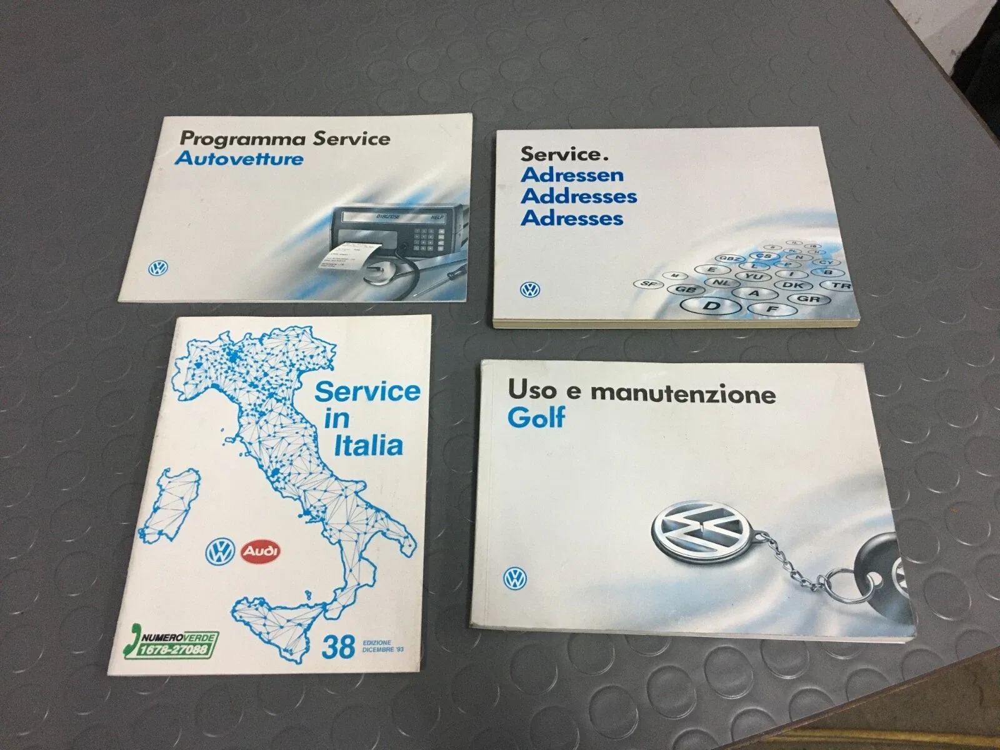
Some of the gap is taxes — but much is third-degree price discrimination: higher prices where demand is less elastic (Portugal), lower where it's more elastic (Greece), with arbitrage actively blocked.
Nonlinear pricing
Block Pricing
A high price for the first block, less for the next — capture surplus from one buyer's own demand
Block Pricing — Pay Less per Unit as You Buy More
Block pricing is the practice of reducing the price of a good as the customer buys more of it. It needs (1) market power and no resale; (2) customers may have identical or different demand curves.
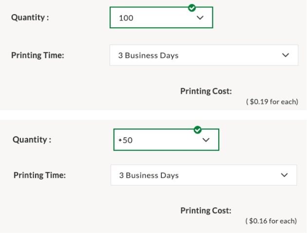
A real printer: first 100 flyers at \$0.19 each, the next 50 at \$0.16 each.
One schedule for everyone, so no IC constraint (unlike the §12.3 menus). But it does need the demand curve: \$0.19 is \(D\) at 100 flyers, \$0.16 is \(D\) at 150.
| Was it worth it? | One price | Two blocks | Perfect PD |
|---|---|---|---|
| Flyers sold | 125 at \$0.175 | 150 | 250 |
| Seller (PS) | \$9.38 | \$12.00 (+28%) | \$18.75 |
| Buyers (CS) | \$4.69 | \$3.75 | \$0 |
| Lost (DWL) | \$4.69 | \$3.00 | \$0 |
Output rises (125 → 150) and the DWL shrinks. Unlike Starbucks (cups flat at 755), block pricing moves toward efficiency.
Block Pricing in Action — Business Flyers
- Varying unit prices offered to the same customer.
- A high price for the first block, lower for subsequent blocks.
A real printer: first 100 flyers at $0.19 each, the next 50 at $0.16 each.
Was it worth it? One price (\(MR=MC\)) → $0.177, 129 flyers, PS ≈ $10.00. Two blocks → 150 flyers, PS = $12.00 (+20%). Perfect PD would take $20. Output rose (129→150) — unlike third-degree PD at Disneyland, block pricing moves toward efficiency.
Block Pricing on the Subway — New York’s OMNY Fare Cap
A ride costs \$3.00. Once you have paid \$35 in the seven days that start with your first tap, every other ride that week is free.
- Market power: one subway system.
- No resale: the cap counts taps on one card or phone.
- Two blocks: \$3.00 a ride, then \$0.
Marginal ≠ average. Ride 20 times in a week and you pay \$35: \$1.75 a ride on average, but your 20th ride cost \$0.
Why cap? The MTA keeps the full fare from occasional riders, while heavy riders face a marginal price of \$0 and ride more: output rises, as with the flyers. Same buyer, a lower price per ride as rides rise: a declining-block tariff.
§12.5
Two-Part Tariffs
Entry fee \(F\) + per-unit price \(p\): replicate perfect PD without reading minds
Two-Part Tariff
A two-part tariff is a pricing strategy in which the payment has two components: a fixed fee \(F\) plus a per-unit price \(p\) — the customer pays \(F + p \times Q\).
The fixed fee gets you in the door; the per-unit price is charged on use:
fixed fee = console · per-unit = each game
fixed fee = annual membership · per-unit = hourly rental
fixed fee = annual membership · per-unit = each item
fixed fee = yearly charge · per-unit = any purchase
Two-Part Tariffs — the Gym
The annual fee captures consumer surplus up front; the per-class price = marginal cost, so members keep using the gym efficiently instead of being priced out.
You are already inside one. Marino comes bundled into the student fee — that is Part 1 — while personal training and some specialty programs are charged on top. Part 2.
Commercial gyms offer the same two dials as a choice: a day pass (\(F=0\)) or a monthly membership (\(p=0\)). Same sorting as the car wash next slide.
Two-Part Tariffs — the Buffet and the Car Wash
The buffet: all in the fee
Cooked trays get thrown out anyway, so one more plate costs ≈ \$0. Charge \(p = 0\) and take everything in the entry fee.
The car wash: both corners on one menu

Wash 3× a month and the plan beats Basic; 2× beats Ultimate, so frequent washers sort themselves into the membership.
Same two dials, \(F\) and \(p\). The buffet sets \(p = 0\) and puts everything in \(F\). The car wash posts both corners, \(F = 0\) or \(p = 0\), and lets usage do the sorting. With \(MC \approx 0\), both are happy to let you consume freely.
Two-Part Tariffs — the Local Car Wash
Option 1 — pay per wash. Basic $13 / Extreme $20 / Ultimate $26. No fee, positive per-unit price.
Option 2 — be a member. $29–45 / month, wash as often as you like. Big fee, per-unit price $0.
Wash 3× a month and the plan beats Basic; 2× beats Ultimate — so frequent washers sort themselves into the membership. Marginal cost of one more automated wash is ≈ $0, so the firm is happy to let them.
Notice neither option is literally \(F + pQ\): pay-per-wash sets \(F = 0\), the plan sets \(p = 0\). The car wash posts a menu of the two corner cases and lets usage do the sorting — the two-part tariff’s dials, used one at a time.
Two-Part Tariff in Steps: Why Costco Charges \$65
One member’s demand, stylized: \(P = 23 - 1.3Q\); Costco’s cost \(MC = \$10\). Set the two parts in order:
Step 1 · the shelf price. Set \(p = MC = \$10\). The member buys the efficient amount, \(Q = 10\), where \(D = MC\).
Pause · how big can the pie get? At \(p = MC\) every unit worth more than it costs gets bought, so the whole triangle between \(D\) and \(MC\) is surplus: the biggest pie possible. Any shelf price above \$10 shrinks it.
Step 2 · the membership. Charge the whole triangle as the fee: ½ × 10 × \$13 = \$65, Costco’s Gold Star fee.
Step 3 · compare one price. \(MR = MC\): \(Q = 5\) at \$16.50. Profit is only B = \$32.50; A = \$16.25 stays with the member, C = \$16.25 is lost.
Step 4 · the real Costco. FY2025: membership fees \$5.3B, about half of operating income; about 90% of members renew. The shelf runs close to cost.
Price use at MC, charge the triangle at the door. The member buys the efficient amount, there is no DWL, and the firm collects all \$65 (vs \$32.50 at one price). With \(MC \approx 0\) (gym, buffet, Disneyland), the fee is the whole area under demand.
Calculus Corner 12.2 — The Two-Part Tariff Lagrangian
Identical consumers, demand \(q(p)\), and \(CS(p)\) = the area under demand above \(p\). Raising \(p\) by \$1 costs each buyer about \(q\) dollars of surplus, so \(\partial CS/\partial p = -q\). Maximize profit per consumer subject to participation:
\[ \mathcal{L} = F + (p - MC)\,q(p) + \lambda\,[CS(p) - F] \]
FOC in \(F\): \(1 - \lambda = 0 \Rightarrow \lambda = 1\) — participation binds. FOC in \(p\):
\[ q + (p - MC)\,q' - q = 0 \;\Rightarrow\; (p - MC)\,q' = 0 \]
Since \(q' < 0\), the only solution is \(p = MC\).
\( p^{\ast} = MC, \qquad F^{\ast} = CS(MC) \)
Profit per consumer \(= CS(MC)\) — the entire competitive surplus. Output equals the competitive level, so there's no DWL; the entry fee converts what would have been CS into a lump-sum extraction.
This is why Disney charges high gate admission, Costco high membership, AWS large up-front commitments: \(F\) is the surplus-capture instrument; pricing usage near MC maximizes the surplus there is to capture.
Application 12.2 — Disneyland: From One Fee to Two Prices
1 · Before 2021: one dial. Pay at the gate, then every ride is free: \(p = 0\). The gate fee collects the whole triangle.
2 · Why \(p = 0\)? One more ride costs Disney about nothing, so \(p = MC \approx 0\) and the fee does the work: the rule from the last slide.
3 · 2021: a second dial. Lightning Lane lets you pay to skip the line, ride by ride or for the day. The ride itself is still free with admission; what you buy is time.
4 · Why now? Crowds. A short wait is scarce, so it has a real cost. Price it, and the guests who value their time most pay for it.
Two-part tariff, \(F + p\): the gate is \(F\); the per-ride price now sits on the scarce extra, the wait, not the ride. 2026: one-day tickets about \$104–\$224 by date; Lightning Lane Multi Pass about \$35 a day.
Walkthrough 12.6 — The Unlimited Pass (Homogeneous)
Problem. Bluebikes sells a \$30.50 monthly pass and charges members nothing per classic ride. A representative member has inverse demand \(p = 6.10 - 0.61q\) (rides per month), and one more ride costs Bluebikes about nothing: \(MC = 0\). Compare the best two-part tariff \((F, p)\) with a per-ride price alone.
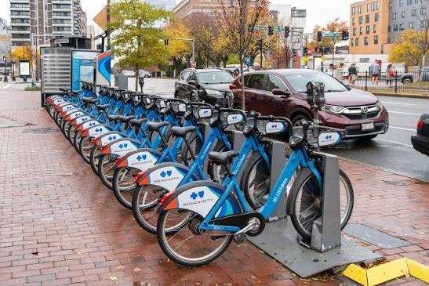
Two-part: \$0 a ride + a pass
Per ride only
1 · Two-part. \(p^{\ast} = MC = 0\): the member rides 10 times. The pass takes the whole triangle: \(F^{\ast} = \tfrac12(10)(6.10) = \mathbf{\$30.50}\), exactly the real price.
2 · Per ride. \(MR = 6.10 - 1.22q = 0\) at \(q = 5\), so \(p = \$3.05\). Profit \$15.25; the member keeps \$7.63 and \$7.63 of rides never happen.
| per member | two-part | per ride |
| rides | 10 | 5 |
| profit | \$30.50 | \$15.25 |
| lost surplus | \$0 | \$7.63 |
Takeaway. When one more ride costs nothing, price rides at zero to make the pie as big as possible, and collect it with the pass: twice the profit of a per-ride price, and no lost rides. That is why unlimited plans charge only for the pass.
Two-Part Tariff with Different Customer Demands
Hold the per-unit price at MC for now, and ask only what single fixed fee \(F\) to charge when the firm can't tell the two types apart.
(W12.7 next lets the firm choose \(p\) too — and the answer stops being \(p = MC\).)
Fee = A (the low type's surplus): both customers stay → collect \(2A\).
Fee = B (the high type's surplus): only the high type stays (A < B) → collect \(B\).
Charge whichever is larger: serve everyone at fee A for \(2A\), or exclude the low type and charge \(B\). The firm compares \(2A\) vs \(B\).
Walkthrough 12.7 — Keep Everyone: Planet Fitness
Problem. A gym is a two-part tariff: a monthly fee plus a price per visit. One fee has to serve casual and heavy members. In 2024 Planet Fitness raised its Classic fee from \$10 to \$15, its first increase since 1998. Model: heavy user A, \(q_A = 10 - p\); casual user B, \(q_B = 7 - p\); one of each; \(MC = 0\).
1 · The fee is capped by B. To keep the casual member, the fee can be no more than B’s surplus: \(F = (7-p)^2/2\).
2 · Profit per pair = two fees + visits: \((7-p)^2 + p(17-2p) = 49 + 3p - p^2\).
3 · Best price: \(3 - 2p = 0\), so \(p^{\ast} = \$1.50\), \(F^{\ast} = 5.5^2/2 \approx \$15\): Planet Fitness’s real fee. Profit \(= 2(15.13) + 21 = \mathbf{\$51.25}\).
Takeaway. Keeping everyone means a fee the casual member will pay, plus a margin on the heavy member’s use. Notice \(p^{\ast} = \$1.50 > MC = 0\): with different members, CC 12.2’s \(p = MC\) no longer holds. Real gyms charge \$0 a visit; heavy users pay their extra through upgrades like the Black Card (about \$25–30). The model’s per-visit price stands in for that.
Walkthrough 12.7 — Heavy Users Only: Peloton
The other choice. Peloton All-Access costs about \$50 a month, on top of the bike, and every class is free to take. It is built for people who ride a lot; casual exercisers never sign up. Same model: A, \(q_A = 10 - p\); B, \(q_B = 7 - p\); \(MC = 0\).
1 · Heavy users only. Set \(p = 0\) and take A’s whole surplus: \(F = 10^2/2 = \$50\). B walks away. Profit \(= \mathbf{\$50}\).
2 · Compare: with one casual member per heavy one, keeping everyone earns \$51.25 > \$50, so Planet Fitness is right to keep everyone.
3 · It flips. When casual members are fewer than about 49%, excluding wins: Peloton sells mostly to people who ride a lot. Drag the slider.
Takeaway. Coverage versus extraction. Planet Fitness’s members are mostly casual, so it keeps everyone; Peloton sells to heavy riders and takes their whole surplus. With only one type served, \(p = MC = 0\) is back.
§12.6
Bundling
When valuations are negatively correlated, the package beats the parts
Bundling
Bundling — a pricing strategy in which a firm sells two or more products together at a single price.
When to use it
1. The firm has market power and can prevent resale.
2. Consumers' demand for the second product is negatively correlated with their demand for the first.
Everyday example: Disney+, Hulu and HBO Max sold together for \$21.99 a month (with ads). Bought one at a time, Disney+ is \$12.49 and HBO Max is \$10.99: just two of the three already cost more than the whole bundle.
Bundling — Positively Correlated Demand
Two subscribers — Madison and Dakota — deciding on Netflix and HBO Max. First, positively correlated demand: Dakota watches far more TV, so Dakota values both services more.
Positively Correlated Valuations (\$ per month)
| Netflix | HBO Max | Bundle | |
|---|---|---|---|
| Madison (watches a little) | \$12 | \$8 | \$20 |
| Dakota (watches a lot) | \$18 | \$12 | \$30 |
Sell separately: \$12 Netflix + \$8 HBO Max, both buy both → \$40 total. (\$18 for Netflix or \$12 for HBO Max would lose Madison.)
Bundle: \$20 bundle, both buy → \$40 total. (\$30 sells only to Dakota.)
No benefit to bundling when valuations are positively correlated — the bundle values (\$20 and \$30) are just as spread out as the parts, so one price captures no extra surplus.
Bundling — Negatively Correlated Demand
Same two subscribers, now negatively correlated demand: Madison is a Netflix fan, Dakota prefers HBO Max. Whoever values one service more values the other less.
Negatively Correlated Valuations (\$ per month)
| Netflix | HBO Max | Bundle | |
|---|---|---|---|
| Madison (Netflix fan) | \$18 | \$8 | \$26 |
| Dakota (HBO Max fan) | \$12 | \$12 | \$24 |
Sell separately: \$12 Netflix + \$8 HBO Max → \$40 total — identical to the positive-correlation case. So the entire difference shows up on the bundle side.
Bundle: \$24 bundle, both buy → \$48 total (+\$8).
Bundling raises revenue \$40 → \$48 with negative correlation: it compresses the spread in total WTP (both value the bundle at \$24–\$26), so a single price captures more.
Pure vs Mixed Bundling — and Why Mixed Wins
Pure bundling
Only the package sells. Microsoft 365 — there is no standalone Word subscription.
Mixed bundling
Bundle and single items. McDonald’s — buy the Big Mac Bundle, or any item on its own.
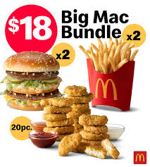
The bundle, or each item on its own: mixed.
Why mixed can beat pure. Three customers value a Big Mac and a McFlurry (ignore costs): two lopsided — a burger fan (\$5, \$0) and a dessert fan (\$0, \$5) — and one balanced, (\$3, \$3).
Sell separately
\$3 each
\$12
Pure bundle
\$5, all three buy
\$15
Mixed
bundle \$6 + items \$5 each
\$16
The lopsided customers would refuse a \$6 bundle — the single items catch them anyway.
Mixed weakly dominates pure (Adams-Yellen): the firm can always price the single items out of reach and reproduce pure bundling. It wins strictly only when some customers are lopsided enough to walk away from the bundle.
Calculus Corner 12.3 — Bundling and Covariance
Same Madison and Dakota as the two Netflix + HBO Max slides. The question: how spread out are their bundle values?
Variance = spread. The average squared distance from the average. Netflix: \$12 and \$18 average \$15, each \$3 away → Var \(= 3^2 = 9\).
Covariance = do they move together? + if the buyer who values Netflix more also values HBO Max more; − if they go opposite ways.
\(\operatorname{Var}(\text{bundle}) = \operatorname{Var}(\text{Netflix}) + \operatorname{Var}(\text{HBO Max}) + 2\operatorname{Cov}\)
spread of the bundle = spread of each part + 2 × how they move together
| Same tastes (Dakota values both more) | Opposite tastes (one fan of each) | |
|---|---|---|
| Var(Netflix) + Var(HBO Max) | 9 + 4 | 9 + 4 |
| 2 × Cov | +12 | −12 |
| Var(bundle) | 25: bundles worth \$20 and \$30 | 1: bundles worth \$26 and \$24 |
One bundle price has to sit at the lower value to keep both buyers. Spread out: price \$20 leaves \$10 on the table → \$40, no better than separate. Squeezed together: price \$24 leaves only \$2 → \$48.
separate \(\leq\) pure bundle \(\leq\) mixed. Negative covariance is what makes pure bundling pay (the sign alone does not guarantee it). Mixed is never worse than pure and wins strictly only with lopsided buyers: McDonald’s, \$16 vs \$15. Adams & Yellen (1976, QJE).
Walkthrough 12.8 — Pure Bundling: Word and Excel
Problem. Word (W) and Excel (E), \(MC = 0\). Two equal types — A: \((v^W, v^E) = (80, 10)\); B: \((10, 80)\). Compare separate sale vs pure bundling.
| Word | Excel | Bundle | |
|---|---|---|---|
| Type A | \$80 | \$10 | \$90 |
| Type B | \$10 | \$80 | \$90 |
Separate: best \(p_W = 80\) (only A) \(= \$80\); by symmetry \(p_E = 80 = \$80\). Total \(= \$160\).
Pure bundle: \(P = 90\) — both value the bundle at \$90, both buy. Revenue \(= \$180\).
Spread, as in CC 12.3: Word is worth \$80 or \$10, average \$45, each \$35 away, so Var \(= 35^2 = 1{,}225\). Excel the same.
| Var(Word) + Var(Excel) | 1,225 + 1,225 |
| 2 × Cov | −2,450 |
| Var(bundle) | 0: both bundles worth \$90 |
One bundle price sits at the lower value. Here both values are \$90, so \$90 leaves \$0 on the table → \$180 vs \$160 separately, a 12.5% lift.
Takeaway. The bundle compresses both types' WTP to a common \$90, so one price captures both. Microsoft's Office bundle survives because writers and analysts have negatively correlated WTPs — neither pays \$80 for the other's app, but both pay \$90 for the package. Same logic: Disney+/Hulu, the fast-food meal deal.
Would mixed bundling do better here? No — it ties at \$180. Both types value the bundle at exactly \$90, so one price already takes every available dollar and standalones have nothing left to catch. Mixed only pulls ahead when bundle values differ — the McDonald’s case.
Theory and Data 12.2 — Cable TV, and the Cousin of Bundling: Tying
Crawford-Yurukoglu (2012, AER)
Across 33 metro markets, bundling channels into tiers (vs selling each channel separately) reduces consumer surplus ~5% on average — but total-welfare effects range \(-1.7\%\) to \(+6.0\%\), because tiering keeps niche networks alive that wouldn't survive standalone.
Bundling welfare is empirically mixed — sign depends on industry demand and supply structure.
Tying — procompetitive or not?
Tying: sell A only if the buyer also takes B. Microsoft 1998 (IE + Windows); EU fined Apple €1.8B (Mar 2024) for App Store anti-steering; Apple-Epic ruling (Apr 2025).
Two theories: Adams-Yellen (procompetitive surplus capture) vs leverage (use dominance in A to foreclose B). Modern antitrust weighs both empirically.
Antitrust Case — US v. Microsoft (1998–2001)
Tying on trial: Windows shipped with Internet Explorer built in, and PC makers were not allowed to remove its icon.
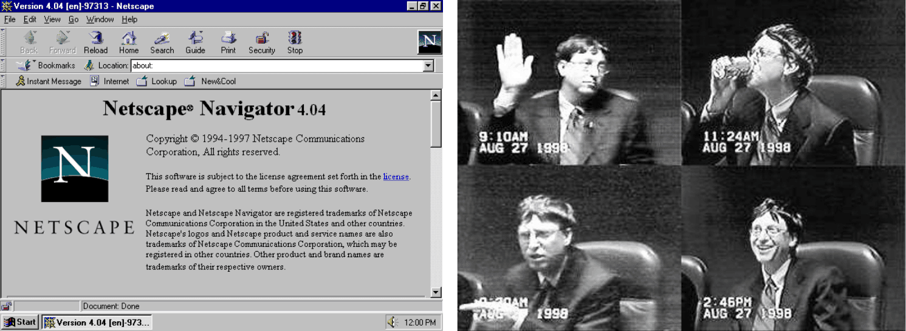
Netscape Navigator, and Bill Gates’s videotaped deposition, 27 Aug 1998.
The monopoly (A): Windows ran on more than 95% of Intel-compatible PCs. The rival (B): Netscape had about 80% of browsers in 1996.
The tie: IE free and built into every copy of Windows. By 2002, IE had about 95% of browsers.
The courts: 1998 DOJ sues → 2000 illegal monopoly, breakup ordered → 2001 appeal: monopoly ruling stands, breakup reversed, tying sent back under the rule of reason → Nov 2001 settlement.
Why tie a free browser? A browser that could run apps on any operating system would have weakened the reason to buy Windows. Tying B protected the monopoly in A: the foreclosure theory, not Adams–Yellen.
Same question, 2024–25. Judge Mehta found Google illegally kept its search monopoly with exclusive default deals (Aug 2024). Remedies (Sep 2025): no forced Chrome sale, exclusive deals banned, some search data shared with rivals. On appeal.
Antitrust Case — Keeping the Market Contestable
A contestable market: entry and exit are cheap, so even a monopolist must act as if a rival could arrive tomorrow. Microsoft’s own economist, Richard Schmalensee, testified in 1999 that much of its competition could not even be named yet: in 1994 no one knew Netscape, Java or Linux would become threats.
1 · What Microsoft had to do (settlement, 2002–2011): no breakup, no US fine, but rules:
- PC makers may remove IE and ship a rival browser as the default.
- No retaliation, no exclusive deals.
- Share the interfaces rival software needs.
2 · Why these rules? Each one lowers a barrier to entry: a way to reach users, to work with Windows, to sign PC makers. The goal was not a lower price; it was keeping the market contestable.
3 · Europe went further: €497M (2004); a browser choice screen from 2010; €561M (2013) when it quietly lapsed.
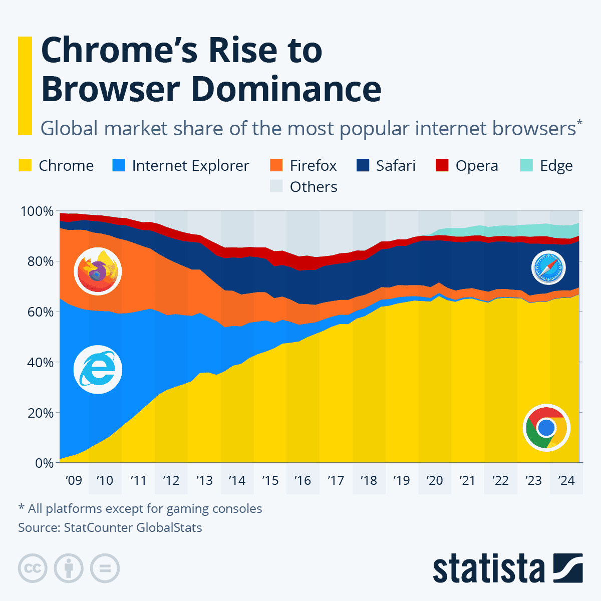
4 · The result: Firefox (2004), then Chrome (2008); Chrome passed IE in 2012. Statista / StatCounter.
Keep entry open, and the threat of entry does the work. It worked here because a browser is cheap to build and free to download. The Google judge made the same choice in 2025: conduct rules, no forced sale of Chrome.
Music Bundling, Era 1 — The CD Album
1990s. A song came on a plastic disc that had to be pressed, shipped and shelved. Selling songs one at a time was not worth it, so the album was the product: 1 hit + 11 other tracks for \$15.
- A fan who wants all 12 songs pays \$15 and is happy.
- A casual fan who wants only the hit still pays \$15: the bundle takes her surplus.
- The firm never has to know who is who: second-degree PD.
Cost of one more copy
High
press, ship, shelve a disc
Price to hear the one hit
\$15
buy the whole album
Casual fan’s surplus
Low
pays for 11 songs she does not want
US music revenue
\$14.6B
1999, the peak
Press ↓: the MP3 breaks the bundle apart.
Music Bundling, Era 2 — iTunes Breaks the Bundle
2003. The MP3 made one more copy cost about \$0. iTunes sold songs one at a time for \$0.99, so the album came apart.
- Consumer surplus ↑: the casual fan pays \$0.99 for the hit, not \$15.
- Revenue ↓: a buyer who paid \$15 for the album now takes 3 favorites for \$2.97.
- Apple Music still offers both: the album, or song by song.
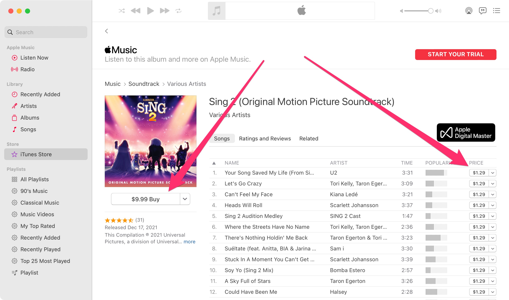
Cost of one more copy
≈ \$0
a download
Price to hear the one hit
\$0.99
one song
Casual fan’s surplus
Higher
pays only for what she wants
US music revenue
\$7.0B
2014, about half (piracy too)
Press ↓: streaming puts the bundle back together.
Music Bundling, Era 3 — Spotify Rebuilds the Bundle
Today. Streaming: one subscription bundles 100M+ songs. The bundle is back, far bigger than the album.
- Low-WTP listeners take the free tier with ads; high-WTP pay Premium \$12.99/mo: versioning on top of the bundle.
- Revenue recovers to a record.
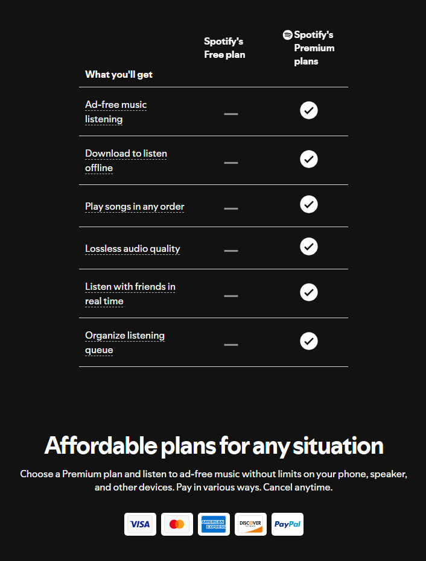
Cost of one more copy
≈ \$0
a stream
Price to hear the one hit
\$0
free tier, with ads
Casual fan’s surplus
Highest
every song, one flat price
US music revenue
\$17.1B
2023, a record
Same songs, three technologies, three pricing regimes. Costly copies → sell the album. Free copies → songs one by one. Everything deliverable at one flat price → the bundle returns, and the casual fan keeps more surplus than in either earlier era.
Poll — Same Chain, Two Neighborhoods
Star Market, Dedham
Suburb · median household income ≈ \$119k
Bright, fully stocked, wide selection
Star Market, Dorchester
City neighborhood · median income ≈ \$39k
Sparse shelves, fewer services · about 3 in 10 households have no car
Same chain, same prices on the shelf tags. Why can Star Market get away with the thinner store in Dorchester?
60 sec to vote then watch the two stores ↓
Answer: B — Shoppers Without a Car Are Locked In
Like iPhone vs Android. Once you are inside one ecosystem, switching is costly, so you rarely see what the other side offers. A shopper with no car is inside the nearest store’s ecosystem: few alternatives means market power.
Price discrimination
Same product, different prices: the student discount, the fare by route.
Choice discrimination
Same price tags, a different product: selection, freshness, service.
How the US measures it: the USDA’s food-access map flags a census tract as low vehicle access when more than 100 households have no car and live more than ½ mile from a supermarket. Low income + low access is what people call a food desert. Evidence: healthy foods are less likely to be stocked in low-income areas (Handbury, Rahkovsky & Schnell, NBER).
Price is one dimension of discrimination; choice is another. The second never shows up on a price tag. Not D: stores may price by location. C is part of it, but costs do not explain why shoppers stay.
§12.7
Network Goods & Two-Sided Platforms
Cross-side network effects: the price structure matters, not just the level
What Is a Network Good? — Value From Others
A network good is one whose usefulness depends on the existence of a physical, virtual, or social network — its value comes from the other people using it.
Three ways people get connected
Physical — wires, towers, rails. Your phone is useless without cell towers.
Virtual — the same platform or format. A PDF opens anywhere because everyone uses PDF.
Social — the people you know. A group chat is worth joining only if your friends are in it.
The newest case: AI chatbots and agents
Meta AI was built into WhatsApp, Instagram, Messenger and Facebook — and reached 1 billion monthly users (May 2025).
Muse, Meta’s AI agent (Sept 2026): message it in WhatsApp and it shops, books travel and fills in forms. 10 million+ people set one up in about six weeks.
Meta did not build a new network. It plugged the AI into one that 3.64 billion people already use every day (Sept 2026) — physical data centers, a virtual app platform, a social graph.
Ch 11 asked why this creates market power. §12.7 asks the harder question: once you have a network good, how do you price it — and to whom?
Network Effects — Why Size Matters for ChatGPT
ChatGPT: 800 million weekly users (Oct 2025) → 900 million (Feb 2026). Why does size help?
1 · Same-side (direct): your friends. Group chats put up to 20 people in one ChatGPT thread (Nov 2025). Weak, though: a chatbot still works when you use it alone.
2 · A data loop. More chats and thumbs-ups help train the next model for everyone. It runs through OpenAI, not between users, and it fades as data piles up.
3 · Cross-side (indirect): app makers. Apps from Spotify, Zillow and Canva run inside ChatGPT (Oct 2025); any developer could submit one from Dec 2025. More users draw more apps, and more apps draw more users.
Effects 1 and 2 are about one group: one population, one price. Effect 3 adds a second group, and that makes ChatGPT a two-sided platform: it picks a price for each side (G 77–79). Either way, growth feeds on itself.
The External Benefit — When You Join ChatGPT
Private benefit (DP): what you get — your own answers. The market stops where DP meets S, at QP.
Social benefit (DS): your chats and thumbs-ups help train answers for everyone; your group chats bring friends in. You ignore that part when you decide.
The efficient network is QS. There the provider needs PS, but the last user pays only what DP says. The brace is the gap no private price collects — so adoption is too low.
Each new user shifts both curves out again (DP1, DS1). Growth feeds on itself.
Why ChatGPT has a free tier. An owner can collect the gap later, so it prices low to buy users: about 50 million paying subscribers out of 900 million weekly users (Feb 2026). Underpricing is investment in its own demand curve. In reverse, each user who leaves hurts those who stay.
Why the Leader Pulls Away — Metcalfe’s Law
Metcalfe’s Law. \(n\) users make \(\dfrac{n(n-1)}{2}\) possible links, about \(\dfrac{n^2}{2}\). Double the users from 10 to 20: links go from 45 to 190, more than four times.
Why it matters for pricing. The \(n\)th user adds \(n-1\) links: the 5th adds 4, the 20th adds 19. Each user is worth more than the last — so demand can bend the wrong way, and the bigger network pulls away.
The critique (Odlyzko & Tilly). You do not talk to everyone; most links are worth little. Value is nearer \(n\log n\): still faster than \(n\), so the leader still pulls away, but \(n^2\) overstates it.
Start-Up Lab — HuskyHive
The need. 2 a.m. before an exam. Tutoring centers are shut and help is scattered across GroupMe, Discord and Reddit.
The product. An AI tutor trained on course material, answering instantly, and matching students into peer study groups.
1. A network good, one side. More Huskies → more answered questions and study groups → a smarter tutor → more Huskies. One population, so one price.
2. The campus: 10,000 students. Rank them by keenness. Core Huskies seed the Q&A library and join first; exam-crammers join last.
3. The value rule. The student ranked \(x\), with \(N\) students on the app (both in thousands), values HuskyHive at \(\;5N\left(1-\tfrac{x}{10}\right)\) dollars a month. Keenness × network size.
4. The numbers we keep
Keenest Husky, 2,000 on the app: 5 × 2 × 1 = \$10
The 2,000th Husky: 5 × 2 × 0.8 = \$8
One server cluster serves 2,000 students
Planned price: \$8 a month
So: charge \$8 from day one, or give it away to win the network first? It is not a matter of taste. The next slides answer it with these numbers: capacity, the network demand curve, and the two places it crosses \$8.
Fixed-Capacity Network Good — HuskyHive
Capacity is fixed in the short run. HuskyHive’s servers can serve so many students and no more, so short-run supply is vertical. An airline is the same: no 201st seat on a 200-seat plane.
1. One cluster: 2,000 students. With 2,000 on the app, demand is \(P = 10 - x\). The 2,000th student pays \$8.
2. Capacity comes in lumps. A second cluster, not one more seat: supply jumps to 4,000.
3. A bigger network, a new demand curve. With 4,000 on the app, \(P = 20 - 2x\). The 4,000th student pays \$12.
Supply doubled and the price went up, \$8 → \$12. Capacity is the network here, and the network is part of the product, so supply and demand do not move independently. Both lines still hit zero at 10,000: the last student on campus values the app at \$0.
The Network Demand Curve — HuskyHive
Each thin line is demand for one network size: \(5N\left(1-\tfrac{x}{10}\right)\) with \(N\) fixed. Each one slopes down.
1. 2,000 on the app: the 2,000th student pays \$8.
2. 4,000: \$12. Core Huskies joining make the app worth more: the price rises.
3. 5,000: \$12.50, the top, point c.
4. 6,000: \$12. 8,000: \$8. The students still joining are exam-crammers. Each still adds network value, but they care little, so the price must fall.
5. Join the dots. Set \(N = x = n\): \(P = 5n\left(1-\tfrac{n}{10}\right) = 5n - \tfrac{n^2}{2}\).
The one demand curve in this course that slopes up, then down. No law of demand is broken: every thin line slopes down. Moving along the red curve changes the network itself, so you read across curves.
Pricing Over the Network Life Cycle — ChatGPT
Three stages: price low to build the network, raise it as the network grows, then cut it to reach casual users. The newest example ran 2022–2026:
Rungs are a ladder, not a scale. The free tier stayed open the whole time.
HuskyHive’s answer, part 1. Don’t charge on day one: the early product is the weakest you will ever ship, because the network is the product. Raise the price as the network thickens, cut it at maturity. And the ads on the free tier? That is the oldest way to charge for a free network good.
Network Pricing in Practice — Google, Free Then Ads
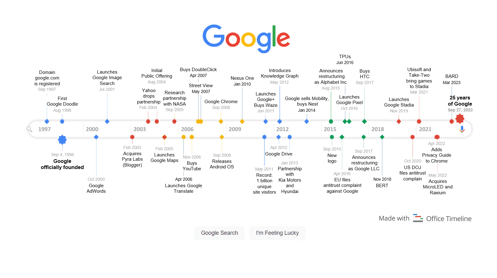
1 · Build the network. Google launches in 1998, free, with bare search results. Ads come later: AdWords, Oct 2000.
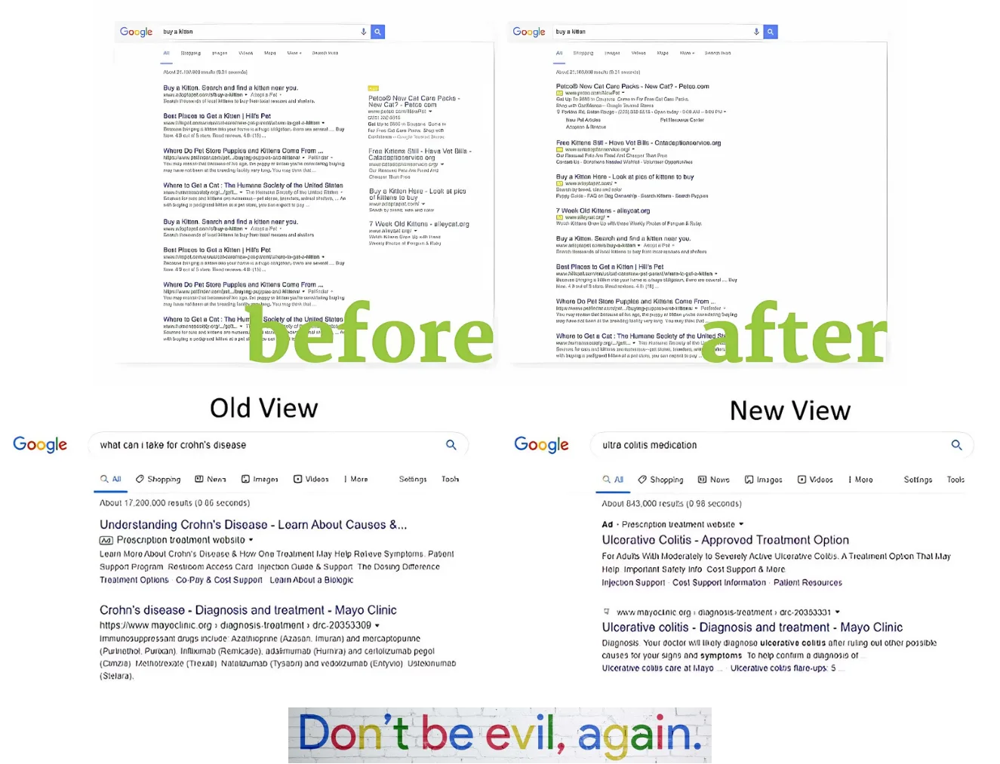
2 · Harvest it. Once the network is huge, bare results give way to pages full of ads.
The price was always there; it was never posted. Users pay in attention, and in the results they don’t see first. Advertisers pay in cash.
Google — Bare Results → Monetized Search
The price was always there — it just was never posted. As the network matured, bare organic results gave way to ad-laden ones. Users still pay: in attention, and in the results they don’t see first.
Market Equilibrium — HuskyHive at \$8
The red hump is HuskyHive’s network demand from before: what the last student to join will pay.
1. The price line. HuskyHive charges \$8 a month.
2. It crosses twice: b at 2,000 students and d at 8,000. At both, the last student values the app at exactly \$8.
3. The peak c is not a crossing. \$12.50 at 5,000 is the most any network size will pay.
4. Nudge it. At 1,000 the last student values it at \$4.50 < \$8: students leave, down to 0. At 3,000, \$10.50 > \$8: more join, up to d. At 9,000, \$4.50: back to d.
b is the tipping point (unstable); d is the stable equilibrium. Below 2,000 a vicious cycle empties the network; above it a virtuous cycle carries it to 8,000. The market settles past the hump, on the falling side.
Finding the Equilibrium — HuskyHive by Algebra
Equilibrium: the last student to join values the app at exactly the price. With \(n\) thousand students and \(P = \$8\): \[5n - \tfrac{n^2}{2} = 8\]
1. Times 2, rearrange: \(\;n^2 - 10n + 16 = 0\)
2. Factor: \((n-2)(n-8) = 0\), so \(n = 2\) (b, 2,000 students) or \(n = 8\) (d, 8,000). For any price: \(n = 5 \pm \sqrt{25 - 2P} = 5 \pm 3\).
4. The ceiling: a root exists only if \(25 - 2P \ge 0\), so \(P \le \$12.50\), the peak c at 5,000. At d: 8,000 × \$8 = \$64,000 a month.
3. Which root holds? Nudge and check.
| Start at | Last student values | vs \$8 | Ends at |
|---|---|---|---|
| 1,000 | \$4.50 | below | 0 (vicious) |
| 3,000 | \$10.50 | above | 8,000 (virtuous) |
| 9,000 | \$4.50 | below | 8,000 |
HuskyHive’s answer. Charge \$8 on day one and the network starts at 0, below b: nobody’s value reaches \$8, and zero is stable too. Give it away until more than 2,000 have joined, then charge \$8: it settles at 8,000. The pricing problem is getting past b.
Mark Zuckerberg’s 2004 Interview — Two Founders
LISTEN FOR
Westmatch (Wesleyan)
Long questionnaire, matches you with your most compatible classmates. Makes money from day one: licenses a custom site to each school.
TheFacebook (Harvard)
Free directory: a profile and who your friends are. Hoped for 400–500 users, has 100,000, wants 100–200 schools by fall. Users first, revenue later.
Same market, opposite order: one charges before the network exists, one builds the network first.
Tipping Point — How Facebook Got Past b
1. One campus at a time
Harvard, 4 Feb 2004. Columbia, Stanford and Yale a month later.
2. Fill one network first
A campus is dense: your friends are already there, so a few thousand users are worth a lot.
3. Keep it exclusive
College email address required. Open to everyone 13+ only in Sept 2006.
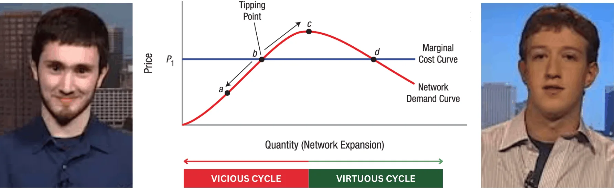
Vicious cycle, below b: friends leave → less value → more leave. Westmatch charged from day one and stayed small; MySpace was bought for \$580M (2005) and sold for \$35M (2011).
Virtuous cycle, past b: more users on campus → more value → more sign-ups. Facebook reached 1 million users by December 2004.
Same loop, opposite directions. Each small, dense campus crossed its own b quickly, then Facebook joined them up. Past b the loop runs by itself. Once Facebook matched MySpace’s worldwide visitors (April 2008), MySpace’s users had a reason to leave, and the loop ran backward.
Virtuous and Vicious Cycles — Real Cases
VICIOUS
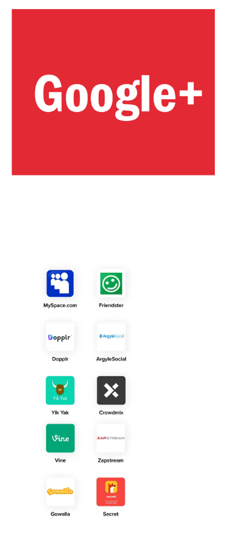
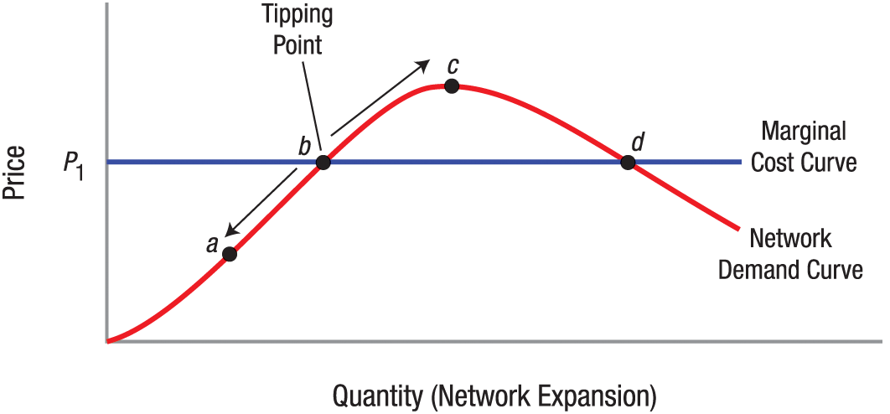
Vicious, below b. Google+ (shut 2019), Vine (2017). Now Stack Overflow: coders ask AI chatbots instead, so fewer questions → fewer answers → fewer visitors. New questions per month were back to 2009 levels by 2025.
Virtuous, past b. Amazon Prime: more members draw more sellers, which draws more members. ChatGPT: 900 million weekly users by Feb 2026.
VIRTUOUS
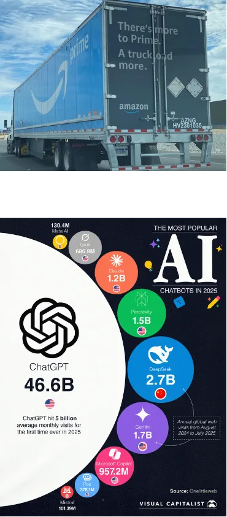
Market Leaders Often Lose Dominance Quickly
Tipping toward monopoly. Users pile onto whichever network is already winning: Google handles 91% of searches (Oct 2026).
And losing it just as fast. Friendster and MySpace both led, then fell when the network effect ran in reverse. Have you even heard of them?
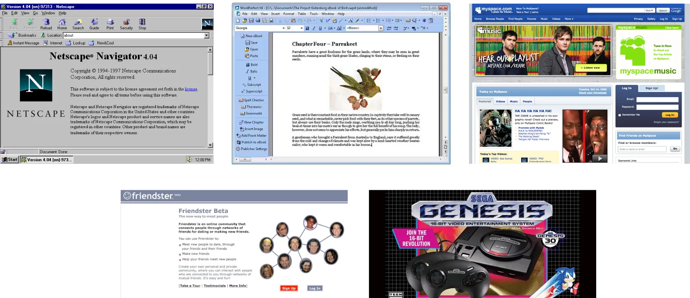
THE BROWSER CROWN, SHARE OF USERS
Netscape 1995–96
Internet Explorer 2002
Google Chrome Oct 2026 (passed IE in 2012)
No share is too big to lose. Internet Explorer held about 95% in 2002 and lost first place within ten years. The network effect that builds a monopoly runs in reverse once a better network starts growing.
Network Goods: Previous → Current Market Leaders
| Industry | Previous market leaders | Current market leader |
|---|---|---|
| Social networking | Friendster (2002–04), Myspace (2005–08) | Facebook (2008–) |
| Internet search | AltaVista (1997–2000) | Google (2001–) · 91% of searches |
| Internet browsers | Netscape (1995–98), Internet Explorer (1999–2011) | Google Chrome (2012–) · 69% |
| Wearable technology | Fitbit (2013–16) | Apple Watch (2017–) · Huawei closing in |
| Tablets / netbooks | HP Mini (2008–09) | Apple iPad (2010–) |
| Video calling | Skype (2005–19), shut down May 2025 | Zoom, Microsoft Teams (2020–) |
| Voice / AI assistants | Apple Siri (2011–15), Amazon Alexa (2016–22) | ChatGPT (2023–) · 900M a week |
Every row is the same story, and it is still being written. Each current leader displaced one that stopped growing its network, so market power built on network effects is real but rented rather than owned. Shares: StatCounter, Oct 2026.
Does the Best Product Win? — Not Always
In a network market a new user weighs quality plus the network. The product that reaches the tipping point first often wins, even if a rival is better.
Value to a new user: \( v = q + a\,N \) \(q\) = quality, \(N\) = users already on it (millions), \(a = 1\)
A, incumbent
\(q = 10,\ N = 8\)
\(v = 10 + 8 = \mathbf{18}\) ✓
B, better product
\(q = 12,\ N = 2\)
\(v = 12 + 2 = 14\)
The joiner picks A, and A’s lead grows by one more user. B wins only if its quality lead beats \(a(N_A - N_B) = 6\), or if users can use both at once.
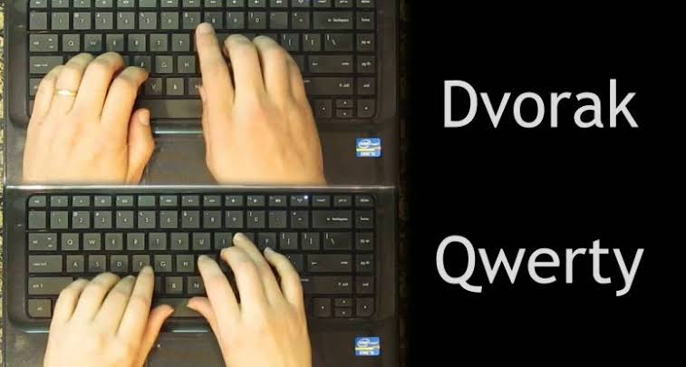
QWERTY (1870s)
Still on nearly every keyboard 150 years later. Whether rival layouts are faster is disputed; the installed base of typists keeps it either way.
Path dependence. History and timing, not just quality, pick the winner. Every joiner chooses sensibly, and the market can still lock in the worse product.
Should We Regulate Network Monopolies?
The dilemma. One big network is the efficient size: everyone can reach everyone. But its owner has monopoly power and can shut rivals out.
OPTION 1 · BREAK IT UP
Splitting the network gives each user a smaller network, so the network effect works against the remedy.
2025: the U.S. judge who found Google a search monopolist declined to make it sell Chrome.
OPTION 2 · REGULATE ACCESS
Treat the network as an essential facility and require interconnection: rivals may plug in, as phone carriers must connect each other’s calls.
• Google (Sept 2025): no exclusive default deals; share some search data with rivals.
• WhatsApp (EU, Nov 2025): users can chat with people on rival apps.
App stores: the gates rival apps must pass through.
An airport hub: an essential facility rivals need to reach.
Regulate access, not size. Keep the one big network and make it open. The cost: being first pays less, so firms have less reason to build the next network.
Standards — Why Firms Fight to Set Them
A standard is a shared format — a plug, a tape, a file type — so every product that uses it is on one network. Whoever’s format becomes the standard owns the biggest network.
Why own it? ① Your installed base becomes everyone’s, so rivals’ customers start using your network. ② You already make it; rivals must retool. ③ You collect license fees and steer the next version.
FIRM SETS IT, 2022–25
Tesla’s plug becomes NACS
Tesla opened its plug design (Nov 2022). Ford (May 2023) and GM (June 2023) signed on; it became standard SAE J3400; most brands switch from 2025 models.
LAW SETS IT, 2024
USB-C on every phone
No firm won, so the EU required USB-C on new phones sold from 28 Dec 2024. Apple moved the iPhone 15 to USB-C in Sept 2023.
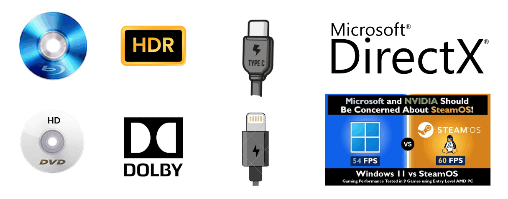
Formats everywhere: Blu-ray vs HD DVD, USB-C vs Lightning, DirectX vs SteamOS.
A standards war is a race to the tipping point. The winner’s installed base becomes the industry’s network. A shared or mandated standard makes the whole network bigger, but no single firm owns it.
Poll — Will AI Chatbots Tip to One Winner?
Search tipped: Google handles 91% of searches. AI chatbots have not, so far: ChatGPT’s share of chatbot web visits fell from about 87% (Jan 2025) to 56% (Sept 2026) as Gemini grew to 25%.
Which fact about AI chatbots works against tipping to one winner?
60 sec to vote then the answer ↓
Answer: B — Cheap Multi-Homing Slows Tipping
Multi-homing means using several networks at once. When the second chatbot costs nothing to try, nobody has to pick one, so no network gets everyone.
PUSH TOWARD ONE WINNER
A scale economies · C data feedback loop · D app builders follow users
PUSH AGAINST
B multi-homing: ChatGPT’s share fell from about 87% to 56% while its users kept growing.
Lock-in decides tipping. Search tipped partly because Google paid to be the default. Anything that makes switching cheap — a shared standard, an easy export, a ban on exclusive deals — works against tipping.
§12.7 · Platforms
How a Platform Sets Its Prices
A platform is a network good with two sides: riders value Uber more when there are more drivers, and drivers when there are more riders. So who should pay?
Poll — How Should Uber Set Its Prices?
Riders will not open the app without drivers nearby; drivers will not sign on without riders to carry. Uber needs both sides at once, and each is waiting for the other.
Uber launches in a new city and earns money only from these two groups. How should it price riders and drivers?
60 sec to vote results on the chicken-and-egg slide
What Is a Platform? — Pipeline vs Platform
Platform: a business that creates value by matching two or more groups of users who need each other, not by making the good itself.
Pipeline
A carmaker buys steel → builds cars → sells them. Value flows one way, and demand depends on its own price.
Platform: Uber
Owns no cars. It matches riders with drivers: 13.6 billion trips (rides and deliveries) in 2025.
What changes in the economics. Each side’s demand depends on the other side’s size: riders \(D_R(p_R,\, N_D)\), drivers \(S_D(p_D,\, N_R)\). More drivers \(N_D\) means shorter waits, so more riders sign on at the same fare.
So a platform sets two prices, \(p_R\) and \(p_D\), and each one moves participation on both sides.
Two-Sided Platform — Riders, Uber, Drivers
One platform, two groups who need each other. Build it one piece at a time.
Because of the green arrows, the split matters, not just the total: a lower rider fare \(p_R\) also raises what the app is worth to drivers.
The Chicken-and-Egg Problem
No letter wins outright. A ignores that each side’s value depends on the other. B, C or D can each be right: it depends on which side is worth more to the other. In Jan 2016 Uber did B and C at once: fare cuts in about 100 cities and hourly guarantees for drivers.
Why subsidize at all? This is a coordination game with two equilibria: the empty platform and the full one are both self-consistent. With no drivers online, not opening the app is a best response. A subsidy breaks the tie.
Subsidize a side
Pay one side to show up first: hourly guarantees for drivers, cheap first rides for riders.
Borrow a network
Threads launched on Instagram accounts: 100 million sign-ups in five days (Jul 2023).
Start tiny and dense
Airbnb began with air mattresses in the founders’ apartment, then one city at a time.
HuskyHive’s answer, part 2: no network to borrow, no capital to subsidize with, so start tiny and dense: one course, one semester.
Why Uber Subsidizes One Side to Win the Other
1 · The dashed line: if people expect a share to join and exactly that share does, expectations come true.
2 · Who joins: expect few drivers, and few riders bother; expect many, and nearly everyone joins. An S-shape.
3 · Three resting points: stuck small (about 4%), critical mass (about 52%, unstable), big and stable (about 88%).
4 · The subsidy’s job: cheap rides and driver guarantees move expectations past critical mass; then the loop carries the platform to the big one.
The poll’s rule: Rochet-Tirole-Weyl price structure. Each side's optimal price reflects (a) its own participation elasticity and (b) the externality its participation creates for the other side. Subsidize the side with the stronger positive cross-side externality.
A \$1 cut on the rider side that attracts 10 riders, each worth \$2 to drivers, loses \$10 in direct revenue but adds \$20 in cross-side value — a net \$10 gain. Keep cutting until marginal direct loss equals marginal cross-side gain.
Peak-Load Pricing — Uber Surge
Peak-load pricing: capacity is fixed in the short run, so charge more when demand is highest. Saturday-night shows, beach rentals in July, Uber when a concert lets out.
Uber surge. At the peak, few drivers are free. Surge raises the fare and the driver’s pay, which pulls more drivers onto the road. That higher pay is why MC is steeper at the peak.
Castillo (2025, Econometrica), with Uber data: against one uniform price level, surge raises total welfare by 2.15% of gross revenue. Riders gain the most; drivers who work long hours lose a little.
Same rule every hour: MR = MC. Off-peak, 30 rides at \$9.80; at the peak, 50 rides at \$22: higher demand and higher MC.
Lock-In — Switching Costs as Market Power
Lock-in: a cost of switching, \(s\), keeps users with a firm even when a rival is a little better or cheaper.
The price it buys. A user stays unless the rival beats the firm by more than \(s\), so the firm can charge up to \(p_{\text{rival}} + s\). Lyft at \$20 and \(s = \$3\): Uber can charge up to \$23. (illustrative)
Bargains first, extraction later. Compete hard for users who are not yet locked in (sign-up promos, cheap first rides), then charge the ones who are.
Uber’s problem: riders and drivers keep Uber and Lyft on one phone, so \(s \approx 0\). Uber builds \(s\): Uber One (46 million members, close to half of gross bookings, end 2025) and Uber Pro driver tiers that reset every three months.
Earned or engineered? The DOJ’s suit against Apple (filed Mar 2024; dismissal denied Jun 2025) says Apple degrades messaging with Android to raise \(s\). Antitrust looks at that line.
Status tiers, paid memberships, rewards networks.
How Platforms Price — Tools You Already Know
Subsidize one side, charge the other
Cross-side pricing: the side that brings the other one in pays less
Jan 2016: fare cuts in about 100 cities plus hourly guarantees for drivers
Surge
Peak-load pricing: MR = MC hour by hour
Surge at peaks: total welfare +2.15% of gross revenue (Castillo 2025)
Membership
Two-part tariff: a fixed fee, then a lower price per use
Uber One: \$9.99 a month, \$0 delivery fees, 6% credits on eligible rides; 46 million members (2025)
Price by patience
Sorting by time: patient buyers pay less, the impatient pay full price
Wait & Save: a lower fare if you accept a longer wait, in 10+ cities (Jul 2025)
Versions
Versioning (§12.3): one trip, a menu of qualities; riders sort themselves
UberX, Comfort, Black: same ride, three prices
Bundle
Bundling (§12.6): sell two services as one package
Uber One covers rides and Uber Eats in one membership
No new theory needed. Each is a tool from this chapter. What is new on a platform: every price also changes how many show up on the other side.
Uber — From Acquisition to Extraction
Phase 1 · acquire
Subsidize both sides
Jan 2016: fare cuts in about 100 cities and hourly guarantees for drivers. Investors paid: net loss \$8.5B in 2019.
Phase 2 · the loop turns
Riders ↔ drivers
More riders → more drivers → shorter waits → more riders. First full-year operating profit: \$1.1B in 2023.
Phase 3 · extract
Raise the cut
2025: \$193.5B gross bookings, \$52.0B revenue = 26.9% of bookings (about 22% in 2019). Operating income \$5.6B.
Heads Up 12.4 — structure, not level
Subsidizing one side isn’t irrational: with cross-side externalities the optimum has unequal prices. Credit cards reward cardholders and charge merchants about 2–3%. Google search is free to users; advertisers pay.
Why the cut can rise. In a big network, one more rider adds little for drivers, so the subsidy buys less; and members are harder to lose. Part of the rise is accounting: revenue over bookings is only a rough take rate.
Platform Pricing — Who Pays, and Why
Subsidize
the side whose presence is worth more to the other side. A \$1 rider fare cut loses \$10 in fares and adds \$20 of value for drivers. Cut until the two are equal.
Charge
the side that gains more from the other side and has fewer places to go: drivers pay Uber’s cut, advertisers pay Google.
Price the peak
When drivers are scarce, set MR = MC hour by hour. Surge: total welfare +2.15% of gross revenue, mostly to riders (Castillo 2025).
Lock in, then extract
Switching costs let the subsidy shrink and the cut rise: about 22% of bookings (2019) → 26.9% (2025). Two apps on one phone cap it.
The rule in one line, for any side \(A\):
\(p_A = c_A \;-\; \big(\text{value one more } A \text{ brings the other side}\big) \;+\; \text{markup from } A\text{'s own elasticity}\)
Structure, not level: a big enough middle term pushes \(p_A\) below cost, or below zero. Within each side, the menu and bundle tools still apply: UberX vs Black, Uber One.
§12.8 — A Note on Arthur Cecil Pigou (1877–1959)
Pigou was Alfred Marshall's chosen successor at Cambridge, holding the Professor of Political Economy chair from 1908 to 1943. His 1920 The Economics of Welfare did three lasting things: it built the welfare-economics framework for asking when intervention raises social welfare; it introduced the externality; and it classified price discrimination into the first / second / third-degree taxonomy this whole chapter is built on.
That taxonomy is also the bridge to Chapter 17. The Pigouvian tax — a per-unit tax equal to the marginal external cost — internalizes negative externalities and restores efficiency. One economist shapes two parts of this book.
Pigou's three legacies
1. Welfare economics — when does intervention help?
2. The externality — and the Pigouvian tax (Ch 17)
3. The PD taxonomy — this chapter's spine
Chapter Summary
Pigou's taxonomy
First (know each buyer), second (know the distribution), third (observe a group label). Each needs less, extracts less.
Perfect PD
\(Q_{PD} = Q_C\), \(CS = 0\), \(DWL = 0\). Efficient and fully extractive. \(\pi_{PD} = TS_C\).
Third-degree ★
\(L_i = -1/\varepsilon_{D,i}\) per segment. More elastic → lower price. The Ch 11 rule, \(K\) times. But output may not move — and then total surplus falls.
Two-part tariff
Homogeneous: \(p^{\ast} = MC\), \(F^{\ast} = CS(MC)\). Replicates perfect PD. Heterogeneous: exclusion can win.
Bundling
Pure bundling beats separate sale iff \(\text{Cov}(v^X, v^Y) < 0\) (Adams-Yellen). Mixed is never worse — strictly better only if some buyers are lopsided enough to skip the bundle.
Two-sided platforms
Price structure reflects own elasticity + cross-side externality. Subsidize the strong-externality side.
Why five prices? Because one price leaves surplus uncaptured. Each tool here converts consumer surplus into producer surplus. Where the tool raises output (perfect PD, block pricing, the homogeneous two-part tariff) DWL falls. Where it doesn't — third-degree at Starbucks, cups flat at 755 — surplus is merely reshuffled and total welfare can drop. Ask which one you are looking at. Next: Chapter 13 puts the rivals back in — Spotify vs Apple, Amazon, YouTube Music — and the Spotify thread becomes a four-firm constellation.
Chapter 12 — complete
Questions?
Next: Chapter 13 — Monopolistic Competition & Oligopoly. The rivals return.